Attention and Executive Function
Chapter 19 of 19Introduction
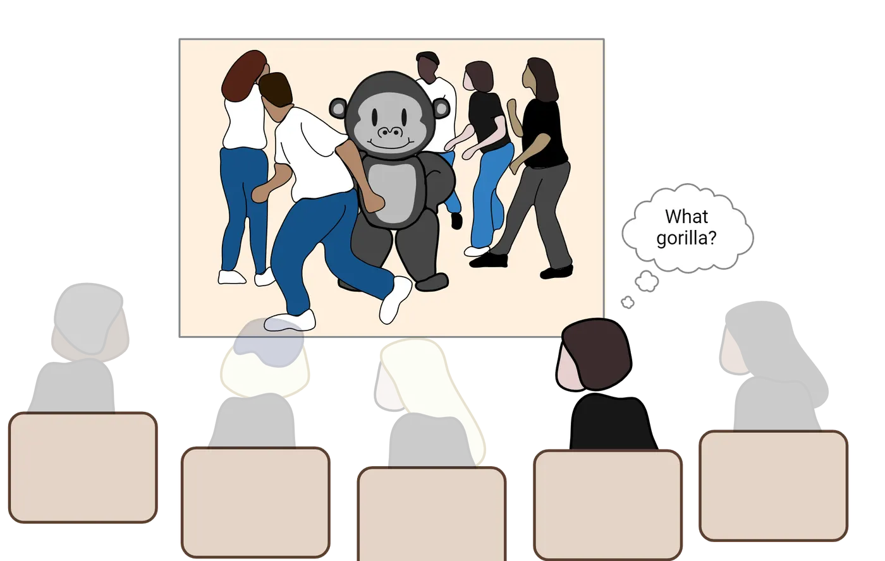
Xander settled into their seat for today’s Introduction to Neuroscience lecture. They were particularly excited about today’s lecture because the topic was attention. People often told Xander that they were attentive to other people’s feelings, that they were attentive to their schoolwork, and that they were attentive to details. So, naturally, Xander wanted to understand how attention works. Professor Jones announced that the first activity of the day was going to be a test of everyone’s attention. The task was simple: watch a video on the big screen of people passing around a basketball and, after the video was finished, write down how many times a person in a white shirt passed the ball. Xander kept their eyes glued to the screen and counted every pass. When the video was over, Xander confidently wrote down their answer: "15". Professor Jones announced the correct answer and Xander was right! BUT, Professor Jones asked a strange question: "Did you see the gorilla?" Xander assumed that this was a joke, or a trick question, because there clearly wasn’t a gorilla in the video. However, when Professor Jones replayed the video in slow motion, sure enough, there it was—right in the middle of the picture. Xander worried that something was wrong with their eyes, or that they weren’t as attentive as they thought. How could they have missed something so obvious?
The video in this anecdote comes from a famous psychology experiments showing the limits of visual attention (if you'd like to watch the full video yourself, visit Dan Simon's website) and it illustrates the fact that much of the information in our sensory world escapes our conscious awareness. To overcome this limitation, we rely on cognitive processes such as attention and executive functions to sift through the barrage of information in order to engage in goal-directed behavior. In this chapter, we'll explore the cognitive and neural systems that underlie attention and executive function, and we'll come to appreciate the wide range of psychological processes and brain mechanisms involved in each. By the end of the chapter, you’ll understand how Xander’s experience was completely normal, and how it represents a natural consequence of the limits of our attention and executive function systems.
19.1What are the Different Psychological Processes Associated with Attention?
By the end of this section, you should be able to
- Distinguish the variety of cognitive processes that fall under the umbrella term of “attention”.
- Differentiate the multiple ways in which attention can be deployed.
Just like other complex cognitive processes, such as emotion (Introduction), attention involves a wide range of abilities and networks. It’s an umbrella term that covers a variety of distinct mental experiences and brain systems. In this first section, we’ll cover some of the different cognitive operations that fall under this umbrella term. We’ll focus almost exclusively on visual attention, but it’s worth pointing out that most of the concepts that you’ll encounter here also occur in other sensory domains such as hearing, touch, and smell—each with their own distinct processes and brain systems.
Arousal, consciousness, and vigilance
“Pay attention!” That’s an expression we’ve all heard at some point in our lives. But what does it mean? We can attend to concrete information like the objects in our external environment, or to fairly abstract concepts such as our own internal train of thought, or even to someone else’s feelings. We can also find ourselves in situations where our attention seems to be working very well (e.g., when you’re laser focused on finishing a paper due the next morning!), or where we're having a hard time concentrating (e.g., sitting in an 8am lecture after not getting much sleep the night before). In this section, we’ll explore how attention can refer to quite distinct cognitive processes (including arousal, consciousness, and vigilance) that are related to our subjective experience and awareness of the internal and external world and how those experiences change over time. In What are the Different Psychological Processes Associated with Attention?, we'll walk through the neural systems that support these processes.
When we think about attention, we might reflect on the fact that our ability to concentrate, or pay attention, changes with our overall mental state of being awake or alert. This is a concept known as arousal, and it refers to global state of “readiness” or awareness of the information that we are processing at any given moment. There are a number of factors that determine your current state of arousal including such things as sleep (did you get a full 8 hours last night?), drugs (have you had any caffeine yet today?), external forces (is that a tiger over there?), and even internal motivation (what’s your passion?).
Consciousness is a complex process that's hard to define, and maybe even harder to study neuroscientifically, but there's no getting around the fact that consciousness and attention are tightly linked. It’s difficult to come up with a single definition of consciousness (Damasio, 1999), but a good starting point is to think of it as the subjective experience and awareness of our internal and external world (Hobson, 1999). Even if it’s hard to pin down a good definition, we probably can agree on the fact that that there are certain times during the day when we are conscious of the world around us (e.g., when we're awake) and other times when we’re not (e.g., when we’re asleep or under general anesthesia). These examples point out that consciousness, like arousal, varies over time. In addition to these normal variations, there are neurological conditions in which consciousness is altered in a more profound way. Individuals who experience disorders of consciousness (Schnakers, 2020), such as persistent vegetative state or minimally conscious state, appear to lack conscious awareness of the external world, despite having relatively preserved sleep-wake cycles.
Yet another concept that often comes to mind when people hear the phrase “pay attention!” is the ability to be focused on one thing over an extended period of time, despite distractions or boredom. Sustaining attentional focus on specific information over time is referred to as vigilance (van Schie et al., 2021), and, like consciousness and arousal, it varies over time (think of a time when you were caught up in a task only to look up at a clock and realize that you forgot to eat lunch!) and even across individuals (think of a Secret Service agent who can stay hyper-focused on assessing potential threats in a crowd).
The final concept that we’ll consider in this section is selective attention. As we engage with the world in our day-to-day lives, our sensory systems are constantly bombarded by information. The sheer volume of information that we experience in each moment—even in a single sensory system such as vision—is staggering. Our brains can’t process it all equally well, and so we constantly pick and choose the subsets of information on which we want to focus. This process is known as selective attention, and it has two complementary features. The first is that the information that we select receives enhanced visual processing in a number of ways (e.g., it’s processed faster and in greater detail). The second feature, which represents the tradeoff of this enhanced processing, is that the information that we don’t select suffers the opposite fate—it’s processed more slowly and in less detail.
Although arousal, vigilance, and selective attention are different processes, they clearly interact with one another in many ways to bring information into conscious awareness. For instance, selective attention functions best when a person's arousal is "just right". That is, too little arousal or too much arousal will negatively impact our ability to select information for processing. Nevertheless, selective attention is one of the more common uses of the term “attention” in psychological research, and it’s what we will focus on for much of the remainder of this chapter. It, like many of the other related processes that we’ve discussed, can also be broken down into different components.
Covert vs. overt orienting
An important distinction concerning our ability to select information for enhanced processing refers to the connection between where we are looking (“with our eyes”) and where we are attending (“with our brains”). Normally, as we shift visual attention, we execute those shifts by simply moving our heads and our eyes to look directly at the things we want to pay attention to. This process is known as overt attention and it allows us to process the information that we want to attend using foveal vision, which is the central portion of your visual system, where you have the highest visual acuity (see Introduction). But this is not the only way in which we can shift attention. In fact, we also routinely shift the focus of our attention to new information without moving our eyes at all. This process is known as covert attention, and it happens more often than you might think. For example, imagine that you’re sitting next to someone who’s watching a funny video on their phone. You might be interested in watching the video too, but it would be rude to look directly at their phone. So instead of looking directly at their device, you pay attention out of the corner of your eye—a classic example of covert attention.
Researchers have developed a number of important paradigms for studying both overt and covert attentional selection in laboratory settings. For instance, Covert attention illustrates a common experimental paradigm in which participants focus their eyes on a fixation cross in the middle of the screen and attend to a peripheral location on the screen using covert attention.
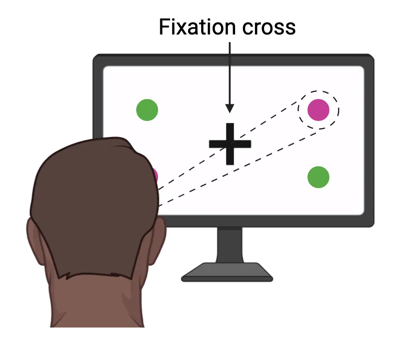
In this case, the focus of attention is illustrated with the dotted lines and circle, even though no such dotted lines or circle appear on the screen. Using a paradigm such as this, researchers can ask participants to shift their attention from one corner of the screen to another without moving their eyes and then document how well they are able to process a piece of information (e.g., the purple circle), depending on the focus of their attention. Critically, if there are any differences in performance, they can’t be due to differences in the visual input, because the exact same visual information would be processed in all cases (i.e., the information hitting the retina would be identical when you’re paying attention to the upper left or upper right, assuming that you don’t move your eyes). The only difference would be the participant’s mental state, namely, whether they are covertly attending to the purple circle or not.
Endogenous vs. exogenous orienting
Do we consciously decide what to pay attention to from one moment to the next? Or does the focus of our attention pinball back and forth between the dizzying array of information that hits our eyeballs at any given moment? The answer to these questions, like many choices in psychology and neuroscience, is “both”. As you engage with the world, there are many situations in which you control the focus of your awareness. Perhaps you are doing this right now as you shift your eyes back and forth between this text and the pages of your notebook where you’re writing down information. This deliberate process of shifting of attention from one piece of information to another is referred to as endogenous attention (sometimes referred to as top-down attentional control), and it requires conscious awareness and deliberation. But equally often in our day-to-day lives, attention is captured by a novel stimulus in the world in an automatic fashion, seemingly outside of our control. Imagine that someone unexpectedly runs by you down the hall. You look up from your reading before you even realize it, clearly shifting your attention away from what you were doing without really intending to do so. This anecdote illustrates the phenomenon of exogenous attention (sometimes referred to as bottom-up attentional control), and it also represents an important way in which our attention selects different sources of information over time.
There are a number of ways to study endogenous and exogenous shifts of attention in a laboratory environment. Posner (1980; Posner & Cohen, 1984) developed perhaps the best-known paradigm using a simple task in which participants have to detect targets that can appear at one of two locations on a screen (Posner cueing paradigm). Participants fixate their eyes on a dot in the middle of the screen and then receive a cue telling them to focus attention (covertly!) to one side of the screen or the other. After a delay, a target appears either on the side indicated by the cue (a valid trial) or on the opposite side (an invalid trial).
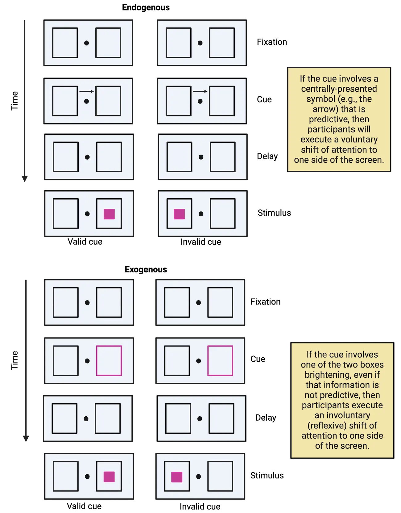
One of the interesting features of this task is that the experimenter can alter the nature of the cue to involve either (a) a centrally presented stimulus that indicates the side to attend (e.g., the arrow pointing either way) or (b) a peripheral flashing light around one of the two sides of the screen. The experimenter can also vary how helpful the cue is. For instance, the cue might correctly predict the location of the upcoming target on 75% of the trials. If that’s the case, it’s an informative cue and it’s worth using it to figure out where the target will appear. In other situations, the cue might be totally random and only predict the target location half of the time. If that’s the case, then the cue isn’t informative, and it wouldn’t really be worth using it to figure out where the target will appear. As it turns out, by varying these two features (the type of cue and its predictability), you can elicit and then study either voluntary or involuntary shifts of attention.
If the cue involves a centrally presented letter and it’s informative (i.e., it correctly predicts the location of the target more often than not), then participants will execute an endogenous (voluntary) shift of attention in order to focus awareness on the cued side. If, however, the cue involves a brightening of one of the two boxes—even when it’s not informative (i.e., it’s random)—then the flashing boxes will capture attention automatically using an exogenous (involuntary) shift of attention. In this second case, participants know that the flashing boxes aren’t helpful, but they just can’t help themselves from shifting their focus to the side of the screen that flashes.
Visual search
Another way in which attention moves from one piece of information to another involves visual search—our ability to scan the world to search for specific objects or pieces of information. Finding an object in a crowded environment requires us to shift the focus of our awareness to many locations until we find the one that we are looking for. In some cases, the object reveals itself to us effortlessly; but in other cases, it requires significant focus and concentration. Imagine, for example, that you’re trying to locate your suitcase on a crowded conveyer belt at the airport. Let’s suppose that your suitcase is an uncommon color (e.g., lime green). If that’s the case, then it might jump out at you immediately, regardless of how many other suitcases there are on the belt (since yours is the only one that’s lime green!). This is a phenomenon known as pop out and can happen quite easily when you’re searching for a single distinct feature (i.e., a singleton feature) such as a unique color or a unique shape. If, however, the only way to find your suitcase is to look for the suitcase that’s blue (a common color) and that has four wheels (which also might be common). In this new scenario, you would have to expend a lot of mental energy focusing on finding a combination of the right suitcase color and the right wheel pattern. This scenario involves what we call conjunction search (i.e., searching for a combination of two individual features) and it is much more effortful (Treisman, 1988; Treisman & Gelade, 1980).
Visual search illustrates an example of a computer-based visual search paradigm. When participants search for singleton features, as in the top row, they find the target quickly (because of pop out) and the time that it takes does not depend on the number of distracting objects. When participants have to search for a combination of two features, then it takes them longer to respond (because of conjunction search), and, critically, their response times increase with each additional distractor item.
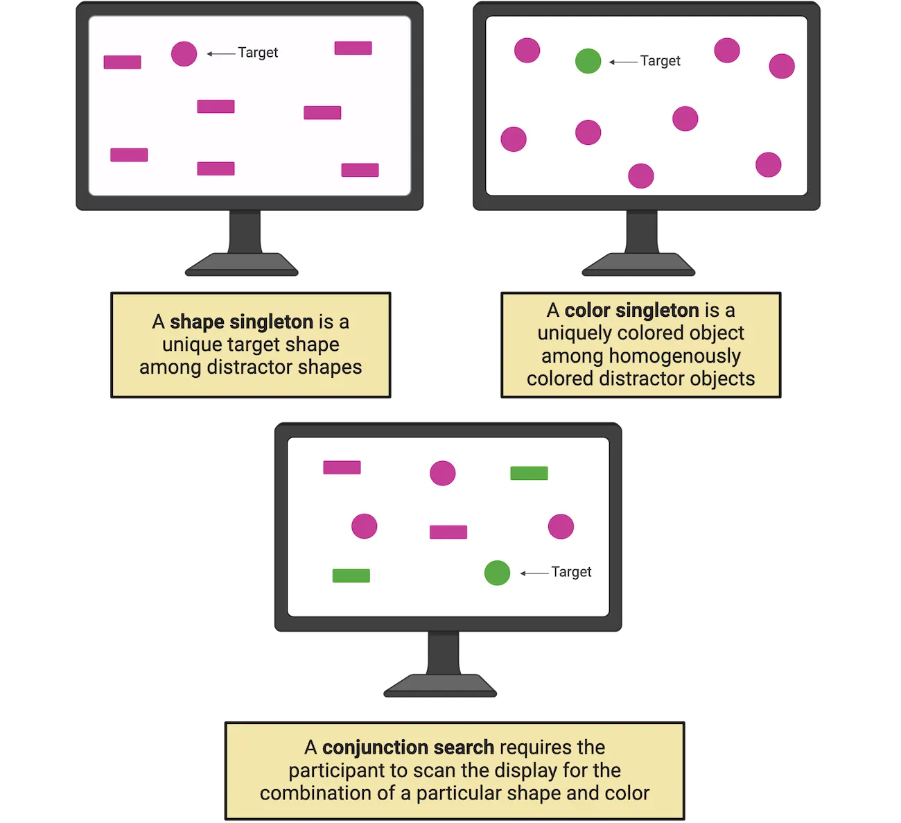
Summary
The concepts of arousal, vigilance, and selective attention are all tightly related aspects of our brain’s ability to bring certain pieces of information into conscious awareness and maintain that information over time. When considering selective attention more closely, we start to see the complexities involved in shifting the focus of our awareness, and to appreciate how those shifts involve a number of factors, including the degree to which we make those shifts voluntarily, as well as how those shifts line up with where we’re looking.
Key terms
Arousal, consciousness, vigilance, selective attention, overt attention, covert attention, endogenous attention, exogenous attention, visual search, pop out, conjunction searchReferences
Damasio, A. R. (1999). The feeling of what happens: Body and emotion in the making of consciousness. New York, NY: Harcourt College Publishers.
Hobson, J. A. (1999). Consciousness. Scientific American Library.
Posner, M. I., Snyder, C. R., & Davidson, B. J. (1980). Attention and the detection of signals. Journal of experimental psychology, 109(2), 160–174.
Posner, M. I. (1980). Orienting of attention. The Quarterly journal of experimental psychology, 32(1), 3–25. https://doi.org/10.1080/00335558008248231
Schnakers, C. (2020). Update on diagnosis in disorders of consciousness. Expert review of neurotherapeutics, 20(10), 997–1004. https://doi.org/10.1080/14737175.2020.1796641
Treisman, A. (1988). Features and objects: The fourteenth Bartlett memorial lecture. The Quarterly journal of experimental psychology. A, Human experimental psychology, 40(2), 201–237. https://doi.org/10.1080/02724988843000104
Treisman, A. M., & Gelade, G. (1980). A feature-integration theory of attention. Cognitive psychology, 12(1), 97–136. https://doi.org/10.1016/0010-0285(80)90005-5
van Schie, M. K. M., Lammers, G. J., Fronczek, R., Middelkoop, H. A. M., & van Dijk, J. G. (2021). Vigilance: Discussion of related concepts and proposal for a definition. Sleep medicine, 83, 175–181. https://doi.org/10.1016/j.sleep.2021.04.038
Practice The multiple-choice and fill-in-the-blank questions for this section are interactive and live on OpenStax, so they are not carried here: open the book on openstax.org.
19.2How is Attention Implemented in the Brain?
By the end of this section, you should be able to
- Map out the cortical and subcortical brain regions that subserve attentional operations.
- Describe the differences between top-down attentional control networks and bottom-up effects of attention on visual processing regions.
The diversity of cognitive processes that we discussed in the last section is mirrored by the complex neuroanatomy that underlies those processes. Arousal, vigilance, and selective attention rely on a wide-ranging and interconnected set of regions that span many levels of the brain—structures buried deep in the brainstem all the way up through the highest levels of cortex. It is important to note that there are rich interconnections between the many brain structures described below, both anatomically and functionally. Nevertheless, we will consider each as a discrete unit in order to better isolate that structure's or system's specific role in attention. To be sure, these systems do not act completely in isolation. For simplicity, however, we'll break down some of them and review the specific roles they play in arousal and attention. Finally, we'll focus on the brain systems involved in attention here, but later, in How Do We Use Executive Functions to Make Decisions and Achieve Goals?, we'll review the neuroanatomical structures most closely associated with executive function, such as the prefrontal cortex (PFC).
Brainstem and subcortical structures
Deep in the posterior regions of the brainstem is a cluster of nuclei known as the reticular formation (Brainstem and subcortical regions associated with arousal and selective attention) that sends signals up to the thalamus and then onto other cortical regions through a circuit called the ascending reticular activation system (ARAS).
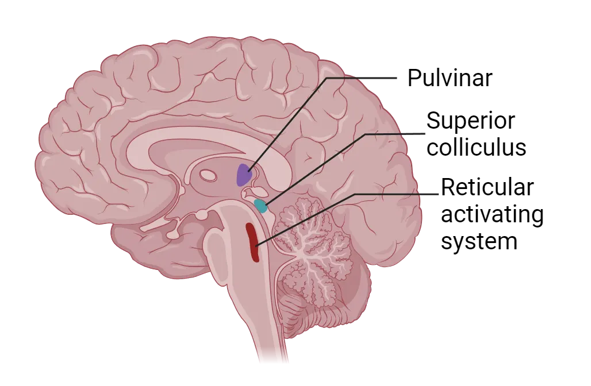
The ARAS is responsive to input from multiple sensory modalities, is involved in sleep/wake cycles, and is thought to be one of the main brain systems responsible for our overall state of arousal (see Introduction). In fact, early research demonstrated that animals with lesions through the brainstem fell into a comatose state, whereas electrical stimulation of this region can wake a sleeping animal (Bremer, 1935; Moruzzi & Magoun, 1949). Studies involving humans provide similar evidence, namely, that damage to the hindbrain, including the ascending reticular activation system, can produce a comatose state (Parvizi & Damasio, 2003). These results illustrate the crucial role of the ARAS in maintaining arousal, but it is also important to note that other research suggests that it plays a role in orienting responses as well, for instance, in our ability to disengage and refocus attention to new sources of information (Aston-Jones & Cohen, 2005).
Moving up the brain, we find another region that's critical for attention within the midbrain, more specifically, the superior colliculus (SC). The superior colliculus is involved in visual processing and orienting behavior—especially in our ability to make eye movements towards a novel visual stimulus (Sparks, 1999). Early research argued that, because of the heavy involvement of the superior colliculus in eye movements, it was only involved in overt, but not covert attention (Wurtz et al., 1982). However, a number of more recent studies demonstrate that the superior colliculus plays an important role in covert attentional processes as well. For instance, temporarily shutting down the monkey superior colliculus (a process known as reversible deactivation) results in impairments on a motion discrimination task that requires covert attention (Desimone et al., 1990; Lovejoy & Krauzlis, 2010), whereas microstimulation of this same area improves an animal's motion discrimination ability under covert attentional conditions (Müller et al., 2005). Finally, patients with brain damage that selectively impairs the superior colliculus (as well as the basal ganglia), a condition known as progressive supranuclear palsy (PSP), demonstrate a range of motor and cognitive impairments, including an inability to shift attention from one location to another (Rafal et al., 1988).
Continuing our climb, one final subcortical structure worth mentioning is the pulvinar, located in the posterior thalamus. The pulvinar does not receive direct projections from the retina, but it nevertheless has neurons that are visually responsive (through indirect connections to the visual system). Moreover, the pulvinar has been implicated in variety of attentional functions, including filtering out distracting information and both overt and covert attentional shifts. For instance, studies involving monkeys (Desimone et al., 1990) and humans (Rafal & Posner, 1987) demonstrate that damage to the pulvinar impairs the ability to attend to a target in the presence of distracting information. Similarly, Petersen and colleagues (1992) demonstrated that temporarily inhibiting neural activity in the monkey pulvinar resulted in selective impairments in covert attentional orienting (using a variation of the Posner cueing paradigm), whereas temporarily facilitating pulvinar activity had the opposite effect, namely, improved covert attentional orienting.
There's one more attentional brain network that's worth mentioning at this point, and it's the network of brain regions involved when you are not focusing your attention on the external world. This network, first labelled the default mode network (DMN) by Marcus Raichle and colleagues (2001), consists of several anatomical structures including, most notably, the medial prefrontal cortex, the precuneus, cingulate cortex, and angular gyrus. Activity in this region is reduced when one focuses their attention on something in the external world, and in contrast, is enhanced when one engages in any number of internally-directed cognitive processes such as mind-wandering and reflection. The focus of the rest of this chapter is on the brain systems involved in attention to the external, rather than the internal world, but there is considerable evidence to suggest that the DMN is important for a range of cognitive processes related to internally-directed attentional functions.
Dorsal and ventral attentional networks
As we continue to ascend into the cerebral cortex, there are two networks critical for shifting our attention from one location to another (Dorsal and ventral attention networks). The dorsal attentional network (DAN) is responsible for voluntary or endogenous shifts of attention—especially in the context of goal-directed behavior, whereas the ventral attentional network (VAN) is responsible for bottom-up or exogenous shifts of attention—especially when reorienting to particularly novel or salient stimuli in our sensory environment (Corbetta & Shulman, 2002). To be sure, the two networks interact to determine our attentional focus, and our top-down goals impact the degree to which bottom-up information can capture attention (e.g., Kincade et al., 2005), but we will consider them separately in the discussion below.
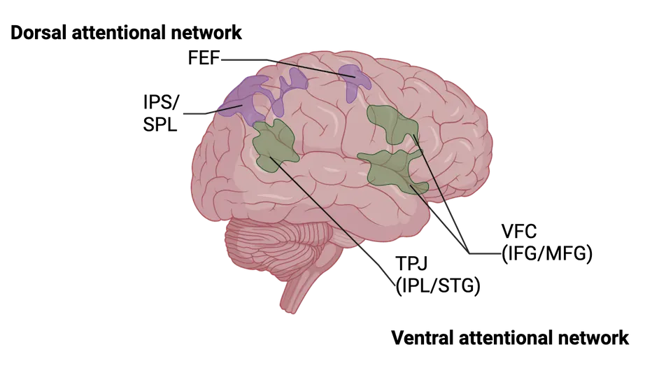
The dorsal attentional network is comprised of several regions, including the superior parietal lobule (SPL), the intraparietal sulcus (IPS), and the frontal eye fields (FEF). In the early 2000s, two separate research groups (Corbetta et al., 2000; Hopfinger et al., 2000) used a modified version of the Posner cueing paradigm (recall Posner cueing paradigm) to monitor brain activity during attentional selection using fMRI (see Methods: MRI/fMRI). The nature of the task allowed them to isolate brain activity specifically associated with the attentional cue, separate from brain activity associated with processing the subsequent targets (a technique known as event-related fMRI, since it allows researchers to link brain activity to individual events over the course of a trial). Each group found that the SPL, IPS, and FEF were all strongly activated, bilaterally, during the cue period (but before the targets appeared on the screen), when participants were presumably directing covert attention voluntarily to the relevant location. These imaging results have been supported by other methodologies, such as non-invasive brain stimulation, which shows that temporarily disrupting IPS activity impairs the ability to control attentional shifts in a voluntary manner (Koch et al., 2005).
The ventral attentional network, as its name implies, involves a group of brain areas located more inferiorly within the cerebral cortex, including the temporoparietal junction (TPJ) and portions of the inferior and middle frontal gyri (collectively referred to as the ventral frontal cortex; VFC). Whereas the DAN implements voluntary shifts of attention, the VAN is thought to be essential for our ability to disengage attention from its current location and move it to a new location, for example, when an unexpected event occurs. Corbetta and colleagues (2000) examined this process using the same Posner cueing paradigm described above. Recall that in this paradigm, sometimes the cue can be invalid, meaning that the target appears on the opposite side of the screen as the cued location. On such trials, participants disengage attention automatically from the cued location and reorient to the uncued location in order to process the visual target. Therefore, isolating brain activity associated with the appearance of invalidly-cued targets will reveal brain areas associated with involuntary or reflexive shifts of attention. Across multiple studies (for a review, see Corbetta et al., 2008), Corbetta and colleagues have shown that the TPJ and VFC are engaged by such exogenous shifts of attention, and that this ventral attention network is strongly lateralized to the right hemisphere.
The dorsal and ventral attentional networks work in tandem to ensure, on the one hand, that we can voluntarily shift attention to information that is relevant for goal-directed behavior (in a top-down manner), but at the same time, that we can maintain the ability to dislodge attention from those locations when necessary, in light of important changes in our sensory world (in a bottom-up manner).
Neuroscience across species: Non-human primates: Attentional effects on sensory processing
In the previous section, we reviewed the brain systems involved in our ability to shift attention from one location to another (attentional control). But what are the consequences of those attentional shifts on brain regions involved in sensory processing? Recall from the beginning of this chapter that when we attend to something, that information benefits from enhanced processing. In this section, we’ll discuss the neural signatures of that enhanced processing in brain areas ranging from subcortical structures, all the way through late visual processing areas.
Many of the studies that demonstrate the effects of selective attention on sensory processing regions once again involve the Posner cueing paradigm, which should seem quite familiar by now. In a typical study, the participant is cued to attend covertly to one location on the screen. Researchers can then record brain activity through a variety of techniques such as event-related potentials (ERP; Methods: EEG/ERP) and functional magnetic resonance imaging (fMRI; see Methods: MRI/fMRI) to investigate the changes in brain activity when the participant is attending to a specific piece of information compared to when that same information is unattended. Recall that by using covert attention, researchers can present the same stimulus display, but vary the location of attention. Thus, any observed differences in brain activity would be due to the attentional state, not to the information hitting the retina (which would be identical in both cases).
A number of studies (e.g., Mangun & Hillyard, 1991) demonstrate that visual attention amplifies visually-evoked ERPs (Attention effects on visually-evoked ERPs). Event-related potentials are an averaged electrophysiological response, resulting from brain activity, that contain a number of positive and negative deflections (peaks and valleys), as shown in the figure. These deflections, or components, are typically named with a letter to indicate whether it’s a positive (P) or negative (N) direction, and a number to indicate its relative position (1st, 2nd, etc.). Researchers can compare the relative magnitude of these peaks and valleys in different conditions of an experimental paradigm to make inferences about differences in underlying brain activity. In this case, the P1 and N1, which are thought to be generated by neural activity in extrastriate cortical regions (i.e., regions just beyond primary visual cortex; Clark & Hillyard, 1996), and which occur as early as ~80 milliseconds after a target appears on the screen, are affected by attention, suggesting that attended information receives preferential treatment relatively early in the course of visual processing.
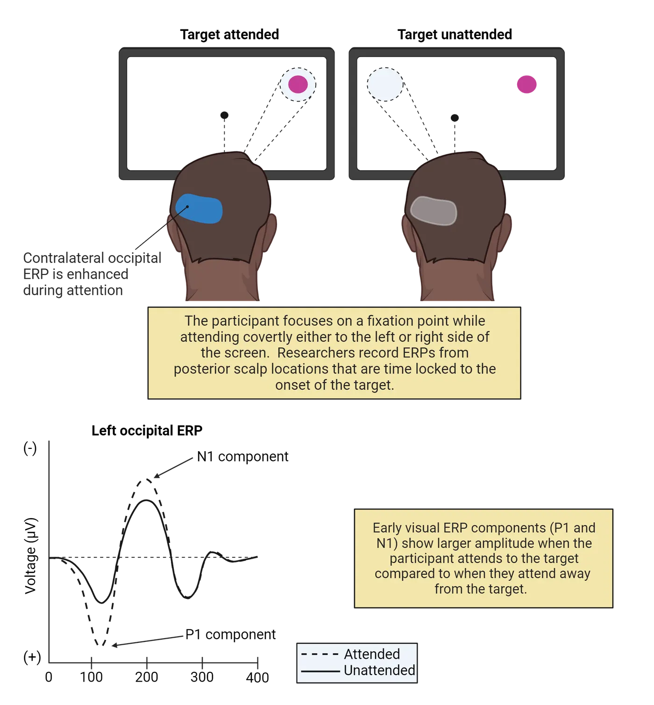
Initial ERP studies of attentional selection typically did not find evidence of attentional modulations in primary visual cortex (also called V1), or in earlier parts of the neural pathways from your eyes to your brain (see Introduction). However, later work confirmed that brain regions even earlier within the visual pathways show attentional modulation, including primary visual cortex (Martinez et al., 1999) and in subcortical structures such as the lateral geniculate nucleus, which is the major relay station for visual information between the eyes and V1 (O’Connor et al., 2002). These results all point to the ability of attentional selection to enhance the neural representation of attended stimuli (i.e., strengthen the brain’s response to those items) even at the earliest stages of visual processing (a concept that we’ll return to later).
The effects of attentional selection are not limited to early sensory processing regions. In fact, these modulations are evident throughout the visual system even in intermediate-stage areas such as V4 (a later visual processing region along the ventral visual stream). For instance, Moran & Desimone (1985) recorded activity from individual neurons in V4 (V4 firing with visual attention) while a monkey covertly attended to a stimulus that was either particularly effective in driving activity in the cell, or to another stimulus that was not effective. Both stimuli were presented at the same time, and both appeared in the relevant neuron’s receptive field, which is the region of space in which a stimulus must occur for that neuron to respond. Thus, the retinal input was identical in both cases (remember the nature of covert attentional manipulations). Remarkably, however, the neurons responded more vigorously when the animal attended to the effective visual stimulus compared to the ineffective stimulus.
![Top: A monkey looking at a screen and attending to different stimuli. Two stimuli appear within the same receptive field of a single V4 neuron, but the monkey attends covertly to one or the other. How a V4 neuron responds when a monkey attends to a stimulus defines it as effective or ineffective. Bottom: Two line graphs showing V4 neuron firing over time. When the monkey attends to the effective stimulus, there is a vigorous response. When the monkey attends to the ineffective stimulus, the response is greatly reduced, despite the fact that the visual input is identical.](../assets/textbook/img/Image-19.10_V4-firing-with-visual-attention.webp)
Attentional modulations are evident in even later-stage visual processing areas such as the fusiform face area (FFA) and the parahippocampal place area (PPA); two brain regions in the ventral temporal cortex that are thought to be specialized for processing relatively specific categories of visual input—faces and places, respectively. O’Craven and colleagues (1999) recorded fMRI activity while participants viewed overlapping faces and houses on a computer screen (Selective attention in higher-order visual processing regions). On some trials, participants attended to the faces, while in others, they attended to the houses. They found that activity was greater in the FFA when participants attended to a face and greater in the PPA when they attended to a house—providing further evidence that attentional selection enhances neural representations at multiple levels within the visual cortex. As mentioned earlier, this chapter focuses primarily on visual attention, but similar higher-level attentional modulations occur in other sensory modalities such as hearing (cf., Shinn-Cunningham, 2008).
![Top: Diagram of a participant looking at a computer screen with a face/house stimulus on it, as described in the main text. Participants viewed overlapping images on a computer screen while in an fMRI scanner.On some trials, they attended to the faces, while on others, they attended to the houses. Bottom: A line graph showing FFA activity was greater when the participant attended to the faces as opposed to the houses and PPA activity showed greater activity when the participant attended to the houses as opposed to the faces. Plus, a decorative diagram of the ventral side of a human brain with PPA and FFA highlighted](../assets/textbook/img/Image-19.11_Selective-attention-in-higher-order-visual-processing-regions.webp)
Summary
Attentional mechanisms exist across much of the brain, including brainstem and subcortical structures involved in general arousal, cortical networks for voluntary and reflexive shifts of attention in the dorsal and ventral attention networks, respectively, and the consequences of attentional selection on sensory processing systems as early as the lateral geniculate nucleus and stretching into later, higher-level visual processing regions.
Key terms
Ascending reticular activation system, superior colliculus, progressive supranuclear palsy, pulvinar, default mode network, dorsal attentional network, ventral attentional network, fusiform face area, parahippocampal place areaReferences
Aston-Jones, G., & Cohen, J. D. (2005). An integrative theory of locus coeruleus-norepinephrine function: Adaptive gain and optimal performance. Annual review of neuroscience, 28, 403–450. https://doi.org/10.1146/annurev.neuro.28.061604.135709
Bremer, F. (1935). Cerveau ‘isolé’ et physiologie du sommeil = The ‘isolated’ brain and the physiology of sleep. Comptes Rendus Des Seances.Société De Biologie Et De Ses Filiales, 118, 1235–1241.
Clark, V. P., & Hillyard, S. A. (1996). Spatial selective attention affects early extrastriate but not striate components of the visual evoked potential. Journal of cognitive neuroscience, 8(5), 387–402. https://doi.org/10.1162/jocn.1996.8.5.387
Corbetta, M., Kincade, J. M., Ollinger, J. M., McAvoy, M. P., & Shulman, G. L. (2000). Voluntary orienting is dissociated from target detection in human posterior parietal cortex. Nature neuroscience, 3(3), 292–297. https://doi.org/10.1038/73009
Corbetta, M., Patel, G., & Shulman, G. L. (2008). The reorienting system of the human brain: From environment to theory of mind. Neuron, 58(3), 306–324. https://doi.org/10.1016/j.neuron.2008.04.017
Corbetta, M., & Shulman, G. L. (2002). Control of goal-directed and stimulus-driven attention in the brain. Nature reviews. Neuroscience, 3(3), 201–215. https://doi.org/10.1038/nrn755
Desimone, R., Wessinger, M., Thomas, L., & Schneider, W. (1990). Attentional control of visual perception: Cortical and subcortical mechanisms. Cold Spring Harbor symposia on quantitative biology, 55, 963–971. https://doi.org/10.1101/sqb.1990.055.01.090
Hopfinger, J. B., Buonocore, M. H., & Mangun, G. R. (2000). The neural mechanisms of top-down attentional control. Nature neuroscience, 3(3), 284–291. https://doi.org/10.1038/72999
Kincade, J. M., Abrams, R. A., Astafiev, S. V., Shulman, G. L., & Corbetta, M. (2005). An event-related functional magnetic resonance imaging study of voluntary and stimulus-driven orienting of attention. The Journal of neuroscience: The official journal of the Society for Neuroscience, 25(18), 4593–4604. https://doi.org/10.1523/JNEUROSCI.0236-05.2005
Koch, G., Oliveri, M., Torriero, S., & Caltagirone, C. (2005). Modulation of excitatory and inhibitory circuits for visual awareness in the human right parietal cortex. Experimental brain research, 160(4), 510–516. https://doi.org/10.1007/s00221-004-2039-2
Lovejoy, L. P., & Krauzlis, R. J. (2010). Inactivation of primate superior colliculus impairs covert selection of signals for perceptual judgments. Nature neuroscience, 13(2), 261–266. https://doi.org/10.1038/nn.2470
Mangun, G. R., & Hillyard, S. A. (1991). Modulations of sensory-evoked brain potentials indicate changes in perceptual processing during visual-spatial priming. Journal of experimental psychology. Human perception and performance, 17(4), 1057–1074. https://doi.org/10.1037//0096-1523.17.4.1057
Martínez, A., Anllo-Vento, L., Sereno, M. I., Frank, L. R., Buxton, R. B., Dubowitz, D. J., Wong, E. C., Hinrichs, H., Heinze, H. J., & Hillyard, S. A. (1999). Involvement of striate and extrastriate visual cortical areas in spatial attention. Nature neuroscience, 2(4), 364–369. https://doi.org/10.1038/7274
Moran, J., & Desimone, R. (1985). Selective attention gates visual processing in the extrastriate cortex. Science (New York, N.Y.), 229(4715), 782–784. https://doi.org/10.1126/science.4023713
Moruzzi, G., & Magoun, H. W. (1949). Brain stem reticular formation and activation of the EEG. Electroencephalography and clinical neurophysiology, 1(4), 455–473.
Müller, J. R., Philiastides, M. G., & Newsome, W. T. (2005). Microstimulation of the superior colliculus focuses attention without moving the eyes. Proceedings of the National Academy of Sciences of the United States of America, 102(3), 524–529. https://doi.org/10.1073/pnas.0408311101
O'Craven, K. M., Downing, P. E., & Kanwisher, N. (1999). fMRI evidence for objects as the units of attentional selection. Nature, 401(6753), 584–587. https://doi.org/10.1038/44134
Parvizi, J., & Damasio, A. R. (2003). Neuroanatomical correlates of brainstem coma. Brain: A journal of neurology, 126(Pt 7), 1524–1536. https://doi.org/10.1093/brain/awg166
Rafal, R. D., Posner, M. I., Friedman, J. H., Inhoff, A. W., & Bernstein, E. (1988). Orienting of visual attention in progressive supranuclear palsy. Brain: A journal of neurology, 111(Pt 2), 267–280. https://doi.org/10.1093/brain/111.2.267
Raichle, M. E., MacLeod, A. M., Snyder, A. Z., Powers, W. J., Gusnard, D. A., & Shulman, G. L. (2001). A default mode of brain function. Proceedings of the National Academy of Sciences of the United States of America, 98(2), 676–682. https://doi.org/10.1073/pnas.98.2.676
Robinson, D. L., & Petersen, S. E. (1992). The pulvinar and visual salience. Trends in neurosciences, 15(4), 127–132. https://doi.org/10.1016/0166-2236(92)90354-b
Shinn-Cunningham, B. G. (2008). Object-based auditory and visual attention. Trends in cognitive sciences, 12(5), 182–186. https://doi.org/10.1016/j.tics.2008.02.003
Sparks, D. L. (1999). Conceptual issues related to the role of the superior colliculus in the control of gaze. Current opinion in neurobiology, 9(6), 698–707. https://doi.org/10.1016/s0959-4388(99)00039-2
Wurtz, R. H., Goldberg, M. E., & Robinson, D. L. (1982). Brain mechanisms of visual attention. Scientific American, 246(6), 124–135. https://doi.org/10.1038/scientificamerican0682-124
Practice The multiple-choice and fill-in-the-blank questions for this section are interactive and live on OpenStax, so they are not carried here: open the book on openstax.org.
19.3What Happens to Unattended Information?
By the end of this section, you should be able to
- Identify factors that impact the degree to which unattended information is processed.
- Articulate the perceptual load theory and explain its relationship to debates concerning attentional selection.
So far in this chapter, we've talked mostly about the brain systems involved in selecting and processing the things that are the focus of your attention, without much consideration for what happens to the things that are not the focus of your attention at any given moment. We discussed at the beginning of the chapter that attended information benefits from enhanced sensory processing and gains access to our conscious awareness, but what is the fate of everything else? In this section, we'll unpack some of the limits to processing unattended information and discover how those limitations reveal critical bottlenecks in the brain's ability to deal with competing sources of information.
Inattentional blindness
In the beginning of this chapter, we met Xander, who was concerned that there was something wrong with their eyes because they failed to notice a gorilla in the middle of a video showing people passing a basketball (Introduction). That anecdote stems from a famous experiment performed by Simon & Chabris (1999), in which participants did the exact task described earlier, namely, count the number of basketball passes performed by a group of players moving around a scene (if you'd like to watch the full video yourself, visit Dan Simon's website). In their study, roughly 50% of participants failed to notice a person in a gorilla suit walking through the scene (even when it stops in the middle of the room and beats on its chest!). They accurately counted the number basketball passes, so their failure didn't stem from a lack of attention in general. Rather, attention was so focused on the primary task (counting passes) that they were completely unaware of other (even strikingly novel!) information that passed before their eyes. As mentioned earlier, our top-down goals can affect the degree to which bottom-up information can capture attention. This demonstrates the phenomenon of inattentional blindness (originally coined by Mack & Rock, 1998) and it points out that much of the information that is present in our sensory world escapes our conscious awareness. Inattentional blindness is not limited to laboratory settings. In fact, several studies have shown that people will fail to notice a clown riding next to them on a unicycle (Hyman et al., 2010) or money dangling from a tree (Hyman et al., 2014)—even when they have to move to one side or the other in order to avoid walking into the branches with the money!
Inattentional blindness shows that we often fail to notice salient information in plain sight, provided that our attention is engaged on a different source. In a similar manner, we often fail to notice significant changes to visual information that we are processing—a phenomenon known as change blindness (for a review of the differences between inattentional blindness and change blindness, see Jensen et al., 2011). For instance, in one striking experiment, a researcher stopped pedestrians on a sidewalk to engage them in a conversion, but partway through, a large obstacle passed between the researcher and the pedestrian. Unknown to the pedestrian, the researcher who started the conversation (Researcher A) switched places with a different researcher (Researcher B) during the obstruction. Roughly half of the participants failed to notice that they were talking to a totally different person (Simon & Levin, 1998)!
In both inattentional blindness and change blindness, we are sometimes completely unaware of obvious salient and novel information. But what does our brain do with this information? Do these failures imply that we engage in little to no processing of ignored input? Or, rather, does our brain fully encode the basic sensory information but that information somehow does not gain access to conscious awareness? In the next section, we will consider an important historical debate concerning when, and how, unattended information is filtered out by the brain.
Early/late selection
Early attention researchers clearly understood that not all information is processed equally but wrestled with the best way to characterize the nature of selective attention. In the 1950s, Broadbent (1958) developed a model (Broadbent's model of selective attention) that envisioned information processing as proceeding along a series of stages that go from rudimentary (e.g., edge and color detection) to complex (e.g., whole object descriptions, memory matching, etc.). After information passes through these various stages, it can then gain access to higher-level executive functions (e.g., decision making) and conscious awareness. In the model, you see channels (represented by arrows) that reflect different sources of information (these could be different locations in space, different objects, etc.).

Broadbent (1958) argued that attention works like a filtration system and that unattended sources of information are filtered out relatively early in the game, prior to complete processing, a concept known as early selection. Many sources of evidence are consistent with this view. For instance, Cherry (1953) presented participants with speech over headphones and asked them to repeat back what they heard in one ear specifically (different speech was presented to each ear). This is a difficult task known as dichotomous listening, but people can do it quite well with a little training. The interesting thing about these dichotomous listening paradigms wasn't what people were able to report about the speech that they were attending. Rather, after the experiment was over, the researchers asked questions about the speech that was unattended and found that participants might be able to remember lower-level (i.e., basic or sensory) features of the speech such as the pitch or gender of the speaker, but often failed to notice higher-level (i.e., conceptual or semantic) features of the speech such as the language (German vs. English) or whether it was forward vs. backwards speech. Apparently, relatively basic information processing occurred for the unattended information, but higher-level information processing related to the meaning (i.e., semantics) of the speech did not, consistent with early selection.
Not all studies are consistent, however, with the notion of early selection. In fact, other research (e.g., Deutsch & Deutsch, 1963) suggests that all sources of information proceed through relatively late stages of semantic processing, and that only then does attention filter out unattended sources from engaging with executive functions or conscious awareness—a concept known as late selection. Early evidence of late selection also comes from dichotomous listening tasks. For instance, Moray (1959) showed that when a participant's name is presented to the unattended ear, they will reliably notice it and switch the focus of their attention to that ear. You've probably experienced this phenomenon yourself. If you're in a crowded room with many people talking and you're focused on having a conversation with one person, then you probably won't know much about the other conversations going on around you. But, the second someone says your name, it will capture your attention—even if you unaware of everything else that person was saying up until that point. This phenomenon is sometimes referred to as the Cocktail Party Effect and it suggests that, at least in some cases, unattended information is processed to a relatively high level before it is filtered out through attention (you must have processed the meaning, or semantics, of the other conversation to know that they said your name). Interestingly, not all names are the same—other studies (Howarth & Ellis, 1961) showed that a person's own name captured attention more easily than another person's name, further supporting the idea that higher-level semantic features of unattended information (e.g., personal relevance) were being processed.
So, does the attentional filter operate early or late? A classic "either-or" question that has been debated for many years in psychological circles. As with most such questions, and as we'll see in the next section, the answer is probably "both".
Science as a process: Perceptual load and neural correlates
Does selective attention filter out information early (prior to higher-level semantic processing), or late (after such processing has occurred)? Various attempts to accommodate both answers within Broadbent's (1958) information processing framework have been proposed over the years (e.g., Treisman, 1960). However one of the most successful attempts to integrate these two viewpoints comes from the perceptual load theory (Lavie & Tsal, 1994; Lavie, 1995). According to this theory, attention is a limited capacity resource (i.e., there's not enough to go around) that must be allocated strategically to different sources of information. This allocation happens dynamically, depending on a variety of factors, including how much of a strain any given task puts on information processing systems (i.e., perceptual load). When we perform a relatively difficult task (high load), we expend considerable attentional resources to complete it, but when we perform a relatively easy task (low load), we need not engage as much of the attentional currency. The theory also posits that any leftover attentional resources that aren't engaged by the attended task will automatically be deployed to task-irrelevant information.
The perceptual load theory makes several interesting predictions about how much information processing occurs for unattended sources. For instance, the theory argues that if you are engaged in a relatively easy task, then significant attentional resources will be "left over" to be applied to unattended information, which will therefore be processed quite fully and appear to reflect late selection. If, however, you are engaged in a relatively difficult task, then the limited attentional resources that are left over and allocated to unattended information will result in quite impoverished processing and appear to reflect early selection. A real-world example might be the degree to which you notice billboards along the side of the road. If you are driving in very difficult conditions (bad weather, difficult terrain, etc.), you will be so focused on the central task of driving that you will not have any leftover attentional resources to process the billboards. If, however, you are driving in relatively easy conditions, then driving will not consume all of your attentional resources, and the leftover resources will be deployed to unattended information on the side of the road such as the billboards.
There is a large body of evidence to support the perceptual load theory. For instance, Miller (1991) showed that when participants attended to a central letter on a computer screen and ignored surrounding letters, the distracting letters influenced response times more so when the task was easy (low load) compared to when it was hard (high load). Functional MRI research also shows that perceptual load influences the degree to which visual information processing occurs for unattended sources of information. For instance, Schwartz and colleagues (2005) conducted an fMRI experiment in which participants attended to a stream of upright and inverted “t”s in the middle of a computer screen and ignored a flashing checkerboard pattern in the periphery (Perceptual load theory and neural correlates). In some cases, participants performed a relatively easy (low load) task—responding to red “t”s, whether they were upright or inverted (recall that searching for a singleton feature such as color requires little effort). In other cases, participants performed a much harder (high load) version of the task—responding to upright blue “t”s or inverted yellow “t”s (i.e., a conjunction search, which is more difficult). The researchers in this study took advantage of the fact that visual areas exhibit retinotopic organization, which means that the spatial arrangement of information on the retina corresponds to the spatial arrangement of the neurons that process that information in each visual area. Thus, they were able to disentangle brain activity from V1, V2, etc.
![Top: A diagram of the stimuli presented in the perceptual load experiment described in the main text. Participants search for a specific target in a stream of upright and inverted “t”s while ignoring a flashing checkerboard pattern in the periphery. Bottom: A diagram of a human brain with V1-V4 regions highlighted plus a bar graph showing fMRI activity in a range of early visual areas was greater to the checkerboard pattern when the participants completed the low-load version of the task compared to the high-load version, consistent with perceptual load theory.](../assets/textbook/img/Image-19.15_Perceptual-load-theory-and-neural-correlates.webp)
Schwarz and colleagues (2005) found that the irrelevant checkerboard pattern produced significantly greater brain activity in a range of early visual areas in the low load condition compared to the high load condition (Perceptual load theory and neural correlates). Note that the visual displays were identical in both the high and low load cases, but since (according to the perceptual load theory) greater attentional resources would automatically be deployed to the unattended checkerboard under low load compared to high load conditions, there would more extensive neural processing of the checkerboard pattern during the easy version of the task compared to the hard version. Converging ERP evidence (Handy et al., 2001) shows that early visually-evoked potentials mirror the fMRI results, with greater P1 component amplitude to unattended distractors under low perceptual load relative to high perceptual load (see Methods: ERP, Methods: MRI/fMRI).
Summary
Unattended sources of information do not benefit from the same enhanced processing as attended sources, but they are nevertheless processed by the relevant sensory systems in the brain. Historically, attention researchers debated whether the filtering of such information occurred relatively early or late along the sensory pathways. More recent work argues that such distinctions may represent a false dichotomy and that the degree to which attention filters out unattended sources varies dynamically based on factors such as task difficulty and perceptual load.
Key terms
Inattentional blindness, change blindness, early selection, late selection, dichotomous listening paradigm, cocktail party effect, perceptual load theory, low/high load, retinotopicReferences
Broadbent, D. E. (1958). Perception and communication. Oxford: Pergamon Press.
Cherry, E. C. (1953). Some experiments on the recognition of speech, with one and with two ears. Journal of the Acoustical Society of America, 25(5), 975–979.
Deutsch, J. A., & Deutsch, D. (1963). Some theoretical considerations. Psychological review, 70, 80–90. https://doi.org/10.1037/h0039515
Handy, T. C., Soltani, M., & Mangun, G. R. (2001). Perceptual load and visuocortical processing: Event-related potentials reveal sensory-level selection. Psychological science, 12(3), 213–218. https://doi.org/10.1111/1467-9280.00338
Howarth, C. I., & Ellis, K. (1961). The relative intelligibility threshold for one's own name compared with other names. The Quarterly journal of experimental psychology, 13(3), 236–239.
Hyman, I. E., Jr., Sarb, B. A., & Wise-Swanson, B. M. (2014). Failure to see money on a tree: Inattentional blindness for objects that guided behavior. Frontiers in psychology, 5, 356. https://doi.org/10.3389/fpsyg.2014.00356
Hyman, I. E., Jr., Boss, S. M., Wise, B. M., McKenzie, K. E., & Caggiano, J. M. (2010). Did you see the unicycling clown? Inattentional blindness while walking and talking on a cell phone. Applied cognitive psychology, 24(5), 597–607.
Jensen, M. S., Yao, R., Street, W. N., & Simons, D. J. (2011). Change blindness and inattentional blindness. Wiley interdisciplinary reviews. Cognitive science, 2(5), 529–546. https://doi.org/10.1002/wcs.130
Lavie, N. (1995). Perceptual load as a necessary condition for selective attention. Journal of experimental psychology. Human perception and performance, 21(3), 451–468. https://doi.org/10.1037//0096-1523.21.3.451
Lavie, N., & Tsal, Y. (1994). Perceptual load as a major determinant of the locus of selection in visual attention. Perception & psychophysics, 56(2), 183–197. https://doi.org/10.3758/bf03213897
Mack, A., & Rock, I. (1998). Inattentional blindness. Cambridge, MA: The MIT Press.
Miller, J. (1991). The flanker compatibility effect as a function of visual angle, attentional focus, visual transients, and perceptual load: A search for boundary conditions. Perception & psychophysics, 49(3), 270–288. https://doi.org/10.3758/bf03214311
Moray, N. (1959). Attention in dichotic listening: Affective cues and the influence of instructions. The Quarterly journal of experimental psychology, 11(1), 56–60.
Schwartz, S., Vuilleumier, P., Hutton, C., Maravita, A., Dolan, R. J., & Driver, J. (2005). Attentional load and sensory competition in human vision: Modulation of fMRI responses by load at fixation during task-irrelevant stimulation in the peripheral visual field. Cerebral cortex (New York, N.Y.: 1991), 15(6), 770–786. https://doi.org/10.1093/cercor/bhh178
Simons, D. J., & Chabris, C. F. (1999). Gorillas in our midst: Sustained inattentional blindness for dynamic events. Perception, 28(9), 1059–1074. https://doi.org/10.1068/p281059
Simons, D. J., & Levin, D. T. (1998). Failure to detect changes to people during a real-world interaction. Psychonomic bulletin & review, 5(4), 644–649.
Treisman, A. M. (1960). Contextual cues in selective listening. The Quarterly journal of experimental psychology, 12(3), 242–248.
Practice The multiple-choice and fill-in-the-blank questions for this section are interactive and live on OpenStax, so they are not carried here: open the book on openstax.org.
19.4What is the Relationship between Attention and Eye Movements?
By the end of this section, you should be able to
- Articulate the connections between planned eye movements and covert orienting according to the premotor theory of attention.
- Evaluate the contribution of brain regions involved in programming eye movement to covert selective attention.
Earlier, we distinguished between overt attention, which involves performing a rapid eye movement from one point of fixation to another (a saccade) in order to bring information into central vision, and covert attention, which involves shifting the focus of your attention mentally without eye movements. The existence of these two separate methods of deploying attention might suggest that eye movements and covert attentional shifts are distinct processes. However, several researchers have suggested that eye movements and covert attentional shifts are tightly linked. In fact, the premotor theory of attention argues that covert attentional shifts are nothing more than planned, but unexecuted, eye movements. In this section, we'll discuss the major theory behind that line of reasoning and review experimental evidence for how the brain systems involved in programming saccades may also play a critical role in covert attentional orienting.
The premotor theory of attention
The relationship between eye movements and covert attention have been the subject of debate for decades (for recent reviews, see Craighero & Rizzolatti, 2005; Hunt et al., 2019). One suggestion is that covert attentional shifts are, quite simply, planned eye movements that are never executed. An early version of this argument was labelled the oculomotor readiness hypothesis (Klein, 1980), but more recent formulations have been dubbed the premotor theory of attention (Rizzolatti et al., 1987). As mentioned, the central premise of this theory is that attentional shifts are subthreshold eye movements and, by extension, that the neural systems involved in programming saccades are responsible for covert shifts of attention.
Rizzolatti and colleagues (1987) provided early behavioral support for this theory. In their study, participants covertly attended to a location on either the left or right side of a computer screen. As in other covert attention studies, when the target appeared at an attended location, participants responded faster compared to when it was presented at an unattended location. However, there was an interesting twist in their results. If the target appeared at an uncued location farther in the same direction as the attended location, there was less of a penalty than when it appeared at an uncued location on the opposite side of the screen—even if both unattended locations were equidistant from the original attended location. They argued that shifting attention to an unattended location on the opposite side of the screen as the original cue required planning an entirely new eye movement, and therefore there was a larger cost in those situations compared to an unattended location in the same direction of the original cue, which only required a modification of the existing planned eye movement.
Neuroscience across species: Non-human primates: Frontal eye field stimulation
In addition to behavioral experiments linking covert attention and eye movements, neurophysiological studies also provide strong support for the premotor theory of attention. Recall that the dorsal attentional network (Dorsal and ventral attention networks) is responsible for voluntary shifts of attention (including covert shifts of attention), and that one of the key regions in the dorsal network is the frontal eye field (FEF), which is located near the junction of the precentral gyrus and the middle frontal gyrus. As the name implies, the FEFs are critical for planning and executing saccadic eye movements. Electrical stimulation of the FEF elicits eye movements (Bruce et al., 1985), and damage disrupts such movements (e.g., Braun et al., 1992). It is not surprising, therefore, that proponents of the premotor theory of attention have speculated that the FEF plays an important role in covert attentional orienting.
In an ingenious set of experiments, Tirin Moore and his colleagues examined this issue by stimulating neurons in the FEF and then observing the effects of that stimulation on performance in an attention task (Moore & Fallah, 2001). When you stimulate neurons in the FEF, the neurons produce eye movements to a specific location in space. That location is referred to as the motor field of the neuron. Moore & Fallah mapped out the motor field of individual FEF neurons in a macaque using suprathreshold stimulation (i.e., electrical current strong enough to produce an eye movement). Frontal eye field stimulation shows the design of their experiment.
![Left: Diagram of monkey in experiment described in main text. The monkey is trained to focus on the fixation cross in the middle and then responds when a specific target dims slightly. FEF neurons are stimulated while a target in the motor field of that FEF neuron dims. The stimulation is just below the strength needed to cause a saccade (subthreshold). Right: Line graph showing that the monkey is able to detect smaller changes in luminance when the FEF is stimulated, consistent with a covert shift of attention to the target location.](../assets/textbook/img/Image-19.16_Frontal-eye-field-stimulation.webp)
Once the researchers determined the motor field of a neuron, they then trained the animal to covertly attend to a spatial location inside of that motor field. The animal’s task was to respond when a light in the attended location dimmed slightly (the researchers measured the minimum amount of dimming that the animal could reliably detect). On some trials, the researchers delivered subthreshold stimulation to the FEF neurons (i.e., stimulation below the threshold necessary to elicit a saccade). They found that over the course of several blocks of trials, the animal was able to detect more subtle changes in luminance when the FEF was stimulated compared to the control condition (i.e., no stimulation). Critically, the improved performance only occurred for targets that appeared in the motor field of the neuron and not for targets that appeared at other locations on the screen. This suggests that activation of the FEF elicited a covert orienting response to the motor field of the neuron, consistent with the premotor theory of attention.
Converging support for the premotor theory of attention comes from a range of studies, including reversible deactivation (Bollimunti et al., 2018), fMRI (Nobre et al., 2000), and noninvasive brain stimulation studies involving both TMS (Morishima et al., 2009; Fernandéz et al., 2022) and tDCS (Kanai et al., 2012). Nevertheless, there is still debate within the neuroscientific community over the value of the theory in terms of a general explanation of the connection between covert attention and eye movements (for recent critical reviews, see Hunt et al., 2019 and Smith & Schenk, 2012), with some researchers arguing that attention and eye movements are fundamentally independent systems that complement one another, depending on the complexities of our natural environment.
Summary
There is considerable evidence to support the idea that shifts of attention, even when made covertly, engage some of the same perceptual and control systems involved in eye movements. This has led a number of researchers to argue for a premotor theory of attention, in which covert attentional orienting results from planned, but unexecuted saccades. Microstimulation studies in animals show that weak electrical currents applied to a key aspect of the dorsal attentional network—the frontal eye field—result in improved behavioral performance and enhanced neural processing in posterior brain regions, consistent with this premotor theory of attention.
Key terms
Saccade, premotor theory of attention, motor fieldReferences
Bollimunta, A., Bogadhi, A. R., & Krauzlis, R. J. (2018). Comparing frontal eye field and superior colliculus contributions to covert spatial attention. Nature communications, 9(1), 3553. https://doi.org/10.1038/s41467-018-06042-2
Braun, D., Weber, H., Mergner, T., & Schulte-Mönting, J. (1992). Saccadic reaction times in patients with frontal and parietal lesions. Brain: A journal of neurology, 115(Pt 5), 1359–1386. https://doi.org/10.1093/brain/115.5.1359
Bruce, C. J., Goldberg, M. E., Bushnell, M. C., & Stanton, G. B. (1985). Primate frontal eye fields. II. Physiological and anatomical correlates of electrically evoked eye movements. Journal of neurophysiology, 54(3), 714–734. https://doi.org/10.1152/jn.1985.54.3.714
Craighero, L., & Rizzolatti, G. (2005). The premotor theory of attention. In L. Itti, G. Rees, & J. K. Tsotsos (Eds.), Neurobiology of attention (pp. 181–186). Cambridge, MA: Academic Press.
Fernández, A., Hanning, N. M., & Carrasco, M. (2023). Transcranial magnetic stimulation to frontal but not occipital cortex disrupts endogenous attention. Proceedings of the National Academy of Sciences of the United States of America, 120(10), e2219635120. https://doi.org/10.1073/pnas.2219635120
Gan, T., Huang, Y., Hao, X., Hu, L., Zheng, Y., & Yang, Z. (2022). Anodal tDCS over the left frontal eye field improves sustained visual search performance. Perception, 51(4), 263–275. https://doi.org/10.1177/03010066221086446
Hunt, A. R., Reuther, J., Hilchey, M. D., & Klein, R. M. (2019). The relationship between spatial attention and eye movements. Current topics in behavioral neurosciences, 41, 255–278. https://doi.org/10.1007/7854_2019_95
Klein, R. M. (1980). Does oculomotor readiness mediate cognitive control of visual attention? In R. Nickerson (Ed.), Attention and performance VIII (pp. 259–276). Cambridge, MA: Academic Press.
Moore, T., & Fallah, M. (2001). Control of eye movements and spatial attention. Proceedings of the National Academy of Sciences of the United States of America, 98(3), 1273–1276. https://doi.org/10.1073/pnas.98.3.1273
Moore, T., & Armstrong, K. M. (2003). Selective gating of visual signals by microstimulation of frontal cortex. Nature, 421(6921), 370–373. https://doi.org/10.1038/nature01341
Morishima, Y., Akaishi, R., Yamada, Y., Okuda, J., Toma, K., & Sakai, K. (2009). Task-specific signal transmission from prefrontal cortex in visual selective attention. Nature neuroscience, 12(1), 85–91. https://doi.org/10.1038/nn.2237
Nobre, A. C., Gitelman, D. R., Dias, E. C., & Mesulam, M. M. (2000). Covert visual spatial orienting and saccades: Overlapping neural systems. NeuroImage, 11(3), 210–216. https://doi.org/10.1006/nimg.2000.0539
Rizzolatti, G., Riggio, L., Dascola, I., & Umiltá, C. (1987). Reorienting attention across the horizontal and vertical meridians: Evidence in favor of a premotor theory of attention. Neuropsychologia, 25(1A), 31–40. https://doi.org/10.1016/0028-3932(87)90041-8
Practice The multiple-choice and fill-in-the-blank questions for this section are interactive and live on OpenStax, so they are not carried here: open the book on openstax.org.
19.5How Do Clinical Disorders Affect Attentional Function?
By the end of this section, you should be able to
- Articulate the different neuropsychological conditions associated with impaired attentional operations, as well as the varieties of each.
- Explain the relationship between ADHD and forms of attentional disruption that result from brain damage.
Much of our discussion thus far has focused on attentional function in the healthy, typically developing brain. There are, however, a number of neuropsychological and neurodevelopmental disorders that provide unique insights into the brain systems involved in attention. In this section, we'll review a few such disorders to see how they disrupt the normal operations of the attentional system, and how they inform our theories of attention in the healthy brain.
Neglect and extinction
One of the most striking disruptions of attentional function after brain damage is a condition known as spatial neglect (also commonly referred to as visual neglect, hemispatial neglect, or hemineglect). The key feature of patients with this disorder is an inability to attend, or orient, to information from one side of space (Halligan et al., 2003; Parton et al., 2004; Rafal, 1994). Typically, the impacted side of space is contralesional, which means that if the patient has damage to the right side of the brain, then the left (opposite side) of the world will be ignored. Information on the same side as the brain damage (ipsilesional) is often, though not always (Kim et al., 1999), spared. Neglect patients engage with the world seemingly unaware of the presence of information on the contralesional side. They fail to notice objects and people on that side. They might only shave or apply makeup to half of their face. They might even leave half of the food on their plate, or only dress half of their body.
Not all neglect patients experience their problems in the same way. We'll see later that they vary in kind, with different manifestations depending on the type of information that's ignored. But they also vary in degree, ranging from mild to severe. In its mildest form, neglect may manifest itself as extinction (Driver & Vuilleumier, 2001; Riddoch, 2010), which refers to a situation in which patients fail to attend to contralesional visual input, but only when simultaneous input is also present in the ipsilesional visual field. In other words, if you present an extinction patient with information on just one side (even the contralesional, or "bad", side), they will be aware of it, and respond to it. However, if you present them with information simultaneously on both sides (double simultaneous stimulation), then they will only be aware of the information presented ipsilesionally (i.e., the "good" side; see Methods: Lesions).
Clinical features of neglect and extinction
The hallmark symptom of neglect is a failure to attend, or orient, to contralesional information. Most often, this results from damage to the right side of the brain, which means that the left side of the world is typically impaired. Clinicians diagnose this disorder in a number of ways; often using relatively simple pen-and-paper tests, like those shown in Hemispatial neglect
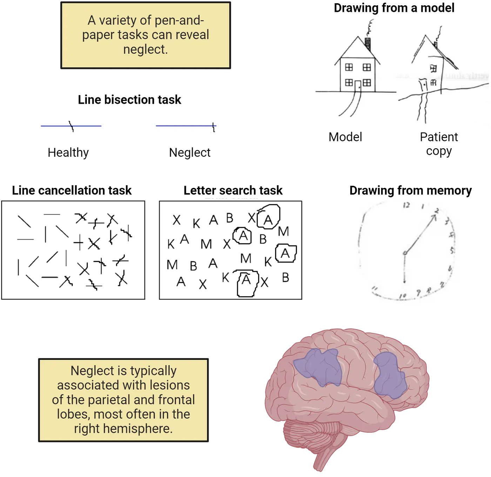
For instance, if you ask a neglect patient to make a mark in the middle of a horizontal line (a line bisection task), they will place their mark too far to the ipsilesional (typically the right) side. They think that they have split the line in half, but in fact, they are unaware of the left-most part of the line, and so they fail to recognize the true midpoint. In a similar task, patients might look at a sheet of paper with a scatter of lines and be asked to make a mark through all the lines that they see (a line cancellation task). Similar to the line bisection task, patients will cross out most of the lines on the right side of the page but miss most, if not all, of the lines on the left side.
Another rather basic diagnostic test involves drawing (Hemispatial neglect). If you ask a typical neglect patient to copy a picture that's in front of them, or if you ask them to draw a picture from memory, they will either fail to include details from the left side of the image, or in some cases, they'll include all the details but misplace them on the right side. They recognize the objects, but they fail to notice, or be aware of, information on one side of the image.
You might think that these previous examples could be easily explained by a lower-level visual impairment. For instance, maybe the patients are blind to one side of the visual world (a condition known as hemianopia). This is not the case, however, as visual examinations demonstrate that neglect patients have preserved lower-level visual processing, and they even show activation in striate and extrastriate brain regions for the information that they fail to attend (Rees et al., 2000). In fact, hemianopic patients don't exhibit the problems that you see in Hemispatial neglect because they know they have a visual impairment, and they adjust accordingly (e.g., by turning their head so that everything falls into their sighted regions). Patients with neglect lack that insight into their condition, a condition known as anosagnosia. That is, they not only miss out on half of the world, but they are unaware that they are missing anything.
Neglect typically results from unilateral damage to the posterior and inferior parietal cortices but can also occur after frontal or subcortical lesions (Hemispatial neglect; Mort et al., 2003). Damage to either side of the brain can produce neglect, although it is more common after right-sided brain damage (Bowen et al., 1999). Despite this variability, notice that these regions overlap considerably with the dorsal and ventral attentional networks reviewed in How is Attention Implemented in the Brain?. In fact, a number of theorists have argued that neglect is best characterized by a disruption of these two key attentional control networks (Corbetta & Shulman, 2011).
Unconscious processing of neglected information
Patients with neglect are unaware of information presented on the contralesional side of space. But is it better to characterize their condition as a problem of conscious awareness, or a problem of perceptual processing? Another way to think about this is to consider neglect in light of our earlier review of early and late selection in What Happens to Unattended Information?. Some evidence suggests that neglected information is subjected to a relatively high level of semantic processing (late selection). For instance, Marshall & Halligan (1988) asked a patient to look at two houses arranged vertically so that the left side of each house fell into the neglected side of space. The right half of each house was identical, but the left side of one of the houses appeared to be on fire. The patient failed to notice any differences between the two houses (because the important differences were on the neglected side of space), but when asked where she would like to live, she routinely selected the house that was not on fire (even though she could not articulate a reason)! This finding has not been consistently replicated (e.g., Bisiach & Rusconi, 1990), but other lines of research suggest that neglect and extinction patients process semantic-level information about sensory input that's ignored. For instance, Berti and Rizzolatti (1992) presented an extinction patient with a double simultaneous stimulation task in which the two objects belonged to the same semantic category but looked very different perceptually (two different cameras seen from different angles), or two objects that looked perceptually similar, but belonged to different semantic categories (a spoon and a key). The patient was able to correctly categorize whether the two belonged to the "same" or "different" categories, even though they were unaware of the object presented contralesionally in the first place.
Different manifestations of neglect
Earlier, we defined neglect as a failure to attend, or orient, to one side of space. That was a somewhat general definition of the condition, and it intentionally glossed over an important aspect that we haven't considered so far, namely, that we can carve up space in many different ways. For instance, we can talk about the left and the right side of the environment around us, but we can also talk about the left and right sides of individual objects in that environment. Similarly, we can talk about space in terms of the external perceptual world, or in terms of our own internal "mental" space. These two examples illustrate the complexity of defining the exact spatial nature of neglect and give a preview of some of the different manifestations of the disorder.
In a classic neuropsychological study, Bisiach and Luzzatti (1978) asked two neglect patients to form a mental picture of the central square in their hometown of Milan, Italy. In one case, they were asked to imagine that they were on the East side looking West and to name all of the buildings that they could see in their "mind's eye". In this case, they mostly named landmarks on the North side of the square (which corresponded to the right side of their mental image) and reported very few buildings on the South side. Interestingly, when they were asked to flip their point of view (i.e., imagine standing on the West side facing East), they did just the opposite. That is, they named mostly buildings from the South side of the square (which now lined up with the right side of their mental image) and very few buildings from the North side. This demonstrates that neglect not only occurs for the external perceptual world, but can also occur for our own internal mental representations of space (representational neglect). Perceptual and representational neglect typically co-occur (Bartolomeo, 2002), but each can occur without the other (Ortigue et al., 2006), a phenomenon in neuropsychology known as a double dissociation.
Neglect can also manifest itself in different spatial frames of reference. For instance, neglect can occur for relatively close (Halligan & Marshall, 1991) or far (Vuilleumeir et al., 1998) regions of space. It can also occur for the left and right side of individual objects, a phenomenon known as object-based neglect (Robertson, 2004; Object-based neglect). If you ask a patient with object-based neglect to circle all of the "A"s on a piece of paper where the letters are clustered into two groups or "objects", they might circle the "A"s from the right side of each cluster, rather than just the "A"s on the right side of the page. Similarly, if they are asked to copy a scene, they might draw objects from the whole picture, but leave out details from the left side of each element. Marshall & Halligan, (1993) demonstrated that when a patient attempted to copy a single potted plant containing two flowers, they only copied the right half of the plant. Interestingly, when the patient was shown the top half of the same picture presented in isolation (which created two separate flowers), they copied the right sides of each flower! The anatomical correlates of each of these subtypes are not fully understood, although there are ongoing efforts to understand the distinct neural systems that give rise to each manifestation (for a review, see Buxbaum, 2006).
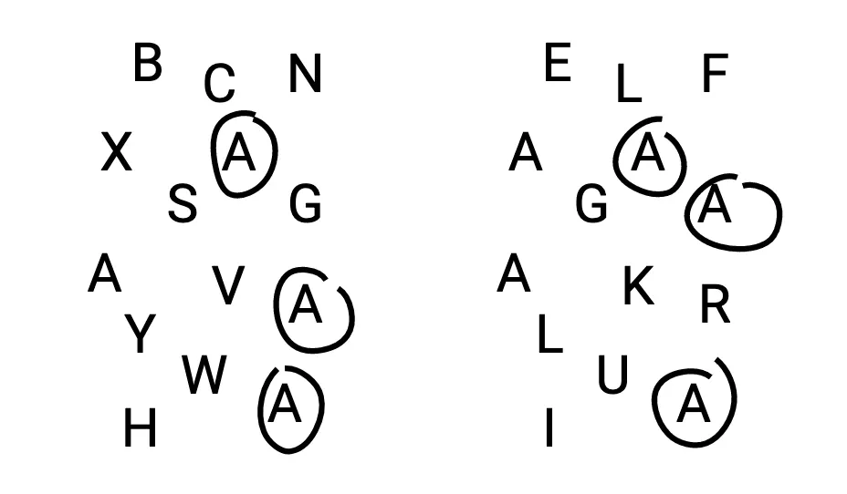
Treatment options for neglect patients
Spatial neglect is relatively common after right hemisphere brain damage (upwards of 50%; Buxbaum, 2004), but spontaneously resolves in a portion of those cases (Farne et al., 2004). For many individuals, however, the symptoms persist indefinitely, which presents significant challenges for daily life. Researchers have explored a range of methods to reduce symptom severity ranging from modest behavioral interventions to drug therapies and brain stimulation (for recent reviews, see Luauté et al., 2006; Umeonwuka et al., 2022).
One intervention strategy involves the use of prism adaptation (PA; Rossetti et al., 1998; Examples of treatment for neglect), in which patients wear specially designed goggles that shift their visual input in one direction (typically, that makes neglected information on the left side appear farther to the right). Rossetti and colleagues showed that a brief period of PA training (roughly 5 minutes) resulted in reduced neglect severity on a range of behavioral tests (e.g., line cancellation) that lasted for several hours. A recent meta-analysis suggests that this relatively low-cost and non-invasive form of therapy yields substantial benefits (Chen et al., 2022).

Another promising, although more intense, therapeutic option for neglect is caloric vestibular stimulation (CVS). This process involves inserting cold or warm water into the ear, which produces rapid involuntary sideways eye movements known as nystagmus. If cold water is delivered to the left ear in a patient with right brain damage, then it will cause the eyes to drift towards the left ear (the neglected side) followed by rapid eye movements back to center. It only takes a few minutes but reduces neglect symptoms significantly for several days following the intervention (Rubens, 1985; Rode et al., 1992).
One final technique that has been used to treat spatial neglect is transcranial magnetic stimulation (TMS; Müri et al., 2013). TMS delivers electric currents that can either boost or suppress cortical excitability in specific brain regions using a coil located on the person's scalp (see Methods: rTMS). The rationale behind its application in neglect stems from an influential theory of attention developed by Kinsbourne (1987) known as the hemispheric rivalry hypothesis. According to the theory, each brain hemisphere competes to pull your attention to the contralateral side, and neglect results from an unfair playing field after damage to one hemisphere, resulting in attention being drawn disproportionately to the ipsilesional side by the intact hemisphere. If this theory is correct, then suppressing brain activity in the intact hemisphere might level the playing fields, which would restore the balance of attentional pulls to each side. Several lines of evidence support this model, for instance, Brighina and colleagues (2013; Examples of treatment for neglect) suppressed brain activity in the contralesional parietal cortex of several neglect patients over the course of two weeks and found that it reduced neglect symptoms significantly and that the effects lasted beyond the TMS regimen.
Summary
A variety of clinical disorders have informed our understanding of the neural basis of attention, including spatial neglect and ADHD. The former provides key insights into the ways in which the brain constructs spatial representations of the world and deploys attentional resources. The latter provides a window into the tight coupling between attentional operations and executive function.
Key terms
Spatial neglect, contralesional, ipsilesional, extinction, double simultaneous stimulation, line bisection task, line cancellation task, hemianopia, anosagnosia, representational neglect, double dissociation, object-based neglect, prism adaptation, caloric vestibular stimulation, nystagmus, transcranial magnetic stimulation, hemispheric rivalry hypothesis, attention deficit hyperactivity disorderReferences
Bartolomeo, P. (2002). The relationship between visual perception and visual mental imagery: A reappraisal of the neuropsychological evidence. Cortex; a journal devoted to the study of the nervous system and behavior, 38(3), 357–378. https://doi.org/10.1016/s0010-9452(08)70665-8
Berti, A., & Rizzolatti, G. (1992). Visual processing without awareness: Evidence from unilateral neglect. Journal of cognitive neuroscience, 4(4), 345–351. https://doi.org/10.1162/jocn.1992.4.4.345
Bisiach, E., & Luzzatti, C. (1978). Unilateral neglect of representational space. Cortex; a journal devoted to the study of the nervous system and behavior, 14(1), 129–133. https://doi.org/10.1016/s0010-9452(78)80016-1
Bitsko, R. H., Claussen, A. H., Lichstein, J., Black, L. I., Jones, S. E., Danielson, M. L., Hoenig, J. M., Davis Jack, S. P., Brody, D. J., Gyawali, S., Maenner, M. J., Warner, M., Holland, K. M., Perou, R., Crosby, A. E., Blumberg, S. J., Avenevoli, S., Kaminski, J. W., & Ghandour, R. M. (2022). Mental health surveillance among children - United States, 2013–2019. MMWR supplements, 71(2), 1–42. https://doi.org/10.15585/mmwr.su7102a1
Bowen, A., McKenna, K., & Tallis, R. C. (1999). Reasons for variability in the reported rate of occurrence of unilateral spatial neglect after stroke. Stroke, 30(6), 1196–1202. https://doi.org/10.1161/01.str.30.6.1196
Brighina, F., Bisiach, E., Oliveri, M., Piazza, A., La Bua, V., Daniele, O., & Fierro, B. (2003). 1 Hz repetitive transcranial magnetic stimulation of the unaffected hemisphere ameliorates contralesional visuospatial neglect in humans. Neuroscience letters, 336(2), 131–133. https://doi.org/10.1016/s0304-3940(02)01283-1
Bush, G. (2010). Attention-deficit/hyperactivity disorder and attention networks. Neuropsychopharmacology: Official publication of the American College of Neuropsychopharmacology, 35(1), 278–300. https://doi.org/10.1038/npp.2009.120
Buxbaum, L. J., Ferraro, M. K., Veramonti, T., Farne, A., Whyte, J., Ladavas, E., Frassinetti, F., & Coslett, H. B. (2004). Hemispatial neglect: Subtypes, neuroanatomy, and disability. Neurology, 62(5), 749–756. https://doi.org/10.1212/01.wnl.0000113730.73031.f4
Chen, P., Hreha, K., Gonzalez-Snyder, C., Rich, T. J., Gillen, R. W., Parrott, D., & Barrett, A. M. (2022). Impacts of prism adaptation treatment on spatial neglect and rehabilitation outcome: Dosage matters. Neurorehabilitation and neural repair, 36(8), 500–513. https://doi.org/10.1177/15459683221107891
Corbetta, M., & Shulman, G. L. (2002). Control of goal-directed and stimulus-driven attention in the brain. Nature reviews. Neuroscience, 3(3), 201–215. https://doi.org/10.1038/nrn755
Driver, J., & Vuilleumier, P. (2001). Perceptual awareness and its loss in unilateral neglect and extinction. Cognition, 79(1-2), 39–88. https://doi.org/10.1016/s0010-0277(00)00124-4
Farnè, A., Buxbaum, L. J., Ferraro, M., Frassinetti, F., Whyte, J., Veramonti, T., Angeli, V., Coslett, H. B., & Làdavas, E. (2004). Patterns of spontaneous recovery of neglect and associated disorders in acute right brain-damaged patients. Journal of neurology, neurosurgery, and psychiatry, 75(10), 1401–1410. https://doi.org/10.1136/jnnp.2002.003095
Gershon, J. (2002). A meta-analytic review of gender differences in ADHD. Journal of attention disorders, 5(3), 143–154. https://doi.org/10.1177/108705470200500302
Halligan, P. W., & Marshall, J. C. (1991). Left neglect for near but not far space in man. Nature, 350(6318), 498–500. https://doi.org/10.1038/350498a0
Halligan, P. W., Fink, G. R., Marshall, J. C., & Vallar, G. (2003). Spatial cognition: Evidence from visual neglect. Trends in cognitive sciences, 7(3), 125–133. https://doi.org/10.1016/s1364-6613(03)00032-9
Kappel, V., Lorenz, R. C., Streifling, M., Renneberg, B., Lehmkuhl, U., Ströhle, A., Salbach-Andrae, H., & Beck, A. (2015). Effect of brain structure and function on reward anticipation in children and adults with attention deficit hyperactivity disorder combined subtype. Social cognitive and affective neuroscience, 10(7), 945–951. https://doi.org/10.1093/scan/nsu135
Kim, M., Na, D. L., Kim, G. M., Adair, J. C., Lee, K. H., & Heilman, K. M. (1999). Ipsilesional neglect: Behavioural and anatomical features. Journal of neurology, neurosurgery, and psychiatry, 67(1), 35–38. https://doi.org/10.1136/jnnp.67.1.35
Kinsbourne, M. (1987). Mechanisms of unilateral neglect. In M. Jeannerod (Ed.), Neurophysiological and neuropsychological aspects of spatial neglect (pp. 69–86). New York: Elsevier Science.
Lei, D., Du, M., Wu, M., Chen, T., Huang, X., Du, X., Bi, F., Kemp, G. J., & Gong, Q. (2015). Functional MRI reveals different response inhibition between adults and children with ADHD. Neuropsychology, 29(6), 874–881. https://doi.org/10.1037/neu0000200
Luauté, J., Halligan, P., Rode, G., Rossetti, Y., & Boisson, D. (2006). Visuo-spatial neglect: A systematic review of current interventions and their effectiveness. Neuroscience and biobehavioral reviews, 30(7), 961–982. https://doi.org/10.1016/j.neubiorev.2006.03.001
Marshall, J. C., & Halligan, P. W. (1988). Blindsight and insight in visuo-spatial neglect. Nature, 336(6201), 766–767. https://doi.org/10.1038/336766a0
Marshall, J. C., & Halligan, P. W. (1993). Visuo-spatial neglect: A new copying test to assess perceptual parsing. Journal of neurology, 240(1), 37–40. https://doi.org/10.1007/BF00838444
Mort, D. J., Malhotra, P., Mannan, S. K., Rorden, C., Pambakian, A., Kennard, C., & Husain, M. (2003). The anatomy of visual neglect. Brain: A journal of neurology, 126(Pt 9), 1986–1997. https://doi.org/10.1093/brain/awg200
Mowlem, F., Agnew-Blais, J., Taylor, E., & Asherson, P. (2019). Do different factors influence whether girls versus boys meet ADHD diagnostic criteria? Sex differences among children with high ADHD symptoms. Psychiatry research, 272, 765–773. https://doi.org/10.1016/j.psychres.2018.12.128
Müri, R. M., Cazzoli, D., Nef, T., Mosimann, U. P., Hopfner, S., & Nyffeler, T. (2013). Non-invasive brain stimulation in neglect rehabilitation: An update. Frontiers in human neuroscience, 7, 248. https://doi.org/10.3389/fnhum.2013.00248
Ortigue, S., Mégevand, P., Perren, F., Landis, T., & Blanke, O. (2006). Double dissociation between representational personal and extrapersonal neglect. Neurology, 66(9), 1414–1417. https://doi.org/10.1212/01.wnl.0000210440.49932.e7
Parton, A., Malhotra, P., & Husain, M. (2004). Hemispatial neglect. Journal of neurology, neurosurgery, and psychiatry, 75(1), 13–21.
Rafal, R. D. (1994). Neglect. Current opinion in neurobiology, 4(2), 231–236. https://doi.org/10.1016/0959-4388(94)90078-7
Rees, G., Wojciulik, E., Clarke, K., Husain, M., Frith, C., & Driver, J. (2000). Unconscious activation of visual cortex in the damaged right hemisphere of a parietal patient with extinction. Brain: A journal of neurology, 123(Pt 8), 1624–1633. https://doi.org/10.1093/brain/123.8.1624
Riddoch, M. J., Chechlacz, M., Mevorach, C., Mavritsaki, E., Allen, H., & Humphreys, G. W. (2010). The neural mechanisms of visual selection: The view from neuropsychology. Annals of the New York Academy of Sciences, 1191, 156–181. https://doi.org/10.1111/j.1749-6632.2010.05448.x
Robertson, L. C. (2004). Space, objects, minds, and brains. New York: Psychology Press.
Rode, G., Charles, N., Perenin, M. T., Vighetto, A., Trillet, M., & Aimard, G. (1992). Partial remission of hemiplegia and somatoparaphrenia through vestibular stimulation in a case of unilateral neglect. Cortex; a journal devoted to the study of the nervous system and behavior, 28(2), 203–208. https://doi.org/10.1016/s0010-9452(13)80048-2
Rossetti, Y., Rode, G., Pisella, L., Farné, A., Li, L., Boisson, D., & Perenin, M. T. (1998). Prism adaptation to a rightward optical deviation rehabilitates left hemispatial neglect. Nature, 395(6698), 166–169. https://doi.org/10.1038/25988
Rubens, A. B. (1985). Caloric stimulation and unilateral visual neglect. Neurology, 35(7), 1019–1024. https://doi.org/10.1212/wnl.35.7.1019
Rubia, K. (2018). Cognitive neuroscience of attention deficit hyperactivity disorder (ADHD) and its clinical translation. Frontiers in human neuroscience, 12, 100. https://doi.org/10.3389/fnhum.2018.00100
Shaw, P., Lerch, J., Greenstein, D., Sharp, W., Clasen, L., Evans, A., Giedd, J., Castellanos, F. X., & Rapoport, J. (2006). Longitudinal mapping of cortical thickness and clinical outcome in children and adolescents with attention-deficit/hyperactivity disorder. Archives of general psychiatry, 63(5), 540–549. https://doi.org/10.1001/archpsyc.63.5.540
Siviy, S. M., & Panksepp, J. (2011). In search of the neurobiological substrates for social playfulness in mammalian brains. Neuroscience and biobehavioral reviews, 35(9), 1821–1830. https://doi.org/10.1016/j.neubiorev.2011.03.006
Umeonwuka, C., Roos, R., & Ntsiea, V. (2022). Current trends in the treatment of patients with post-stroke unilateral spatial neglect: A scoping review. Disability and rehabilitation, 44(11), 2158–2185. https://doi.org/10.1080/09638288.2020.1824026
Valera, E. M., Faraone, S. V., Murray, K. E., & Seidman, L. J. (2007). Meta-analysis of structural imaging findings in attention-deficit/hyperactivity disorder. Biological psychiatry, 61(12), 1361–1369. https://doi.org/10.1016/j.biopsych.2006.06.011
van der Marel, K., Klomp, A., Meerhoff, G. F., Schipper, P., Lucassen, P. J., Homberg, J. R., Dijkhuizen, R. M., & Reneman, L. (2014). Long-term oral methylphenidate treatment in adolescent and adult rats: Differential effects on brain morphology and function. Neuropsychopharmacology: Official publication of the American College of Neuropsychopharmacology, 39(2), 263–273. https://doi.org/10.1038/npp.2013.169
Vuilleumier, P., Valenza, N., Mayer, E., Reverdin, A., & Landis, T. (1998). Near and far visual space in unilateral neglect. Annals of neurology, 43(3), 406–410. https://doi.org/10.1002/ana.410430324
Vysniauske, R., Verburgh, L., Oosterlaan, J., & Molendijk, M. L. (2020). The effects of physical exercise on functional outcomes in the treatment of ADHD: A meta-analysis. Journal of attention disorders, 24(5), 644–654. https://doi.org/10.1177/1087054715627489
Practice The multiple-choice and fill-in-the-blank questions for this section are interactive and live on OpenStax, so they are not carried here: open the book on openstax.org.
19.6How Do We Use Executive Functions to Make Decisions and Achieve Goals?
By the end of this section, you should be able to
- Give examples of different higher-level cognitive operations that enable us to weigh options and make decisions and the tasks used to assess those functions.
- Localize the prefrontal brain regions responsible for the various aspect of higher-level cognitive operations.
We'll wrap up this chapter by considering the suite of cognitive processes that allow us to plan out and successfully engage in behaviors that help us to reach our goals, to maintain or shift focus on important tasks as the need arises, and to keep us from acting impulsively or inappropriately. Collectively, these refer to executive function, and we'll review the different pieces that make up this complex aspect of higher cognition, as well as the brain systems that underlie those processes.
Components of executive function (and their associated tests)
Executive function is a fairly dense and complicated topic, but it involves a host of processes such as setting goals and making concrete plans to achieve those goals ('What do I need to do to get an "A" on my lab writeup?"), being able to switch back and forth between competing tasks ("How am I going to juggle my psychology paper due next Monday and my Art History test next Tuesday?"), and monitoring yourself to know whether things are going well or not ("I made a lot of mistakes on that quiz—what can I do differently next time?"). It also involves our ability to suppress the urge to do things that either won't help you succeed or that would be inappropriate ("Don't look at another student's test."). Each of these represents a distinct aspect of our ability to coordinate information to make decisions and achieve goals, and while they overlap with some of the processes that we've already covered (such as top-down attentional control), they represent a different aspect of higher-level cognition.
We often cycle between multiple activities in our day-to-day lives (e.g., checking text messages while trying to read your textbook), and our ability to make those shifts is known as task switching (Monsell, 2003). Shifting back and forth between activities is effortful, and, critically, it levies a toll on our performance. That is, any time you switch between tasks, your performance will suffer in terms of speed, accuracy, or both. Switching between tasks makes you slower on each, compared to staying focused on just one or the other. This is known as a switch cost and it has been demonstrated in numerous experiments dating back to the early 20th century (Jersild, 1927). Rogers and Monsell (1995) developed a standard paradigm for examining these effects. They presented participants with letters and numbers on a computer screen and then cued them on each trial to decide whether the letters were vowels or consonants, or whether the numbers were odd or even. They found that on trials where the participant had to switch from one task to the other, they were consistently slower than on trials where they did not switch. Another classic paradigm for studying task switching is called the Wisconsin Card Sorting Test (WCST; Berg, 1948; Tasks relying on frontal cortical function). In this task, participants receive a stack of cards with different colored shapes on them. They sort the cards into piles based on one feature (e.g., shapes or colors), but after some amount of time, the experimenter changes the sorting rule without telling them and they have to determine the new rule on their own (using trial-and-error) in order to respond correctly. This requires them to task switch and, like the previous paradigm, entails a switch cost.
![Decorative representations of three tasks described in the main text. A decorative diagram of the WCST, showing the 4 sorting piles and a participant card that must be put into a pile based on a rule (e.g. number of items on the card) that changes over time. A decorative representation of a Tower of London game, with the 3 disks shown in the starting point arrangement and in the goal arrangement. Participants have to move discs from one peg to another to create a specific goal configuration, requiring planning and sequencing. A decorative representation of a Stroop test. Words are printed in congruent colors in one case and incongruent colors in another.](../assets/textbook/img/Image-19.19_Tasks-relying-on-frontal-cortical-function.webp)
A separate core component of executive function is our ability to break down complicated tasks into separate pieces, and then to arrange those pieces in a logical order to achieve our goals. This could involve simple tasks like brushing your teeth or more complicated, long-term activities like planning a wedding. In either case, we need to think about sequencing the behaviors in a way that will yield success. One method for studying these planning and sequencing processes is through a task developed by Shallice (1982) called the Tower of London (ToL) game (Tasks relying on frontal cortical function). In this task, participants rearrange discs on a row of pegs. Their goal is to recreate a pattern that the experimenter shows them, and the rule is that they can only move one disc at a time. Researchers can vary the difficulty of the problem on each trial, and by examining the number (and kind) of moves that a person makes, as well as their speed, they can assess various components of planning and sequencing behavior.
A third critical aspect of executive function relates to inhibitory control, which generally refers to our ability to suppress thoughts or behaviors. We might need to suppress a response because it's inappropriate in the current context (yelling at the referee for your child's soccer match), or because it's a change from our normal, well-rehearsed routine (turning the opposite way on your commute home to run an unscheduled errand). In either case, we have to exercise mental effort in order to avoid the wrong choices. A number of tasks are used to study inhibitory control, with perhaps the most famous one being the Stroop task (Stroop, 1935; Tasks relying on frontal cortical function). This task requires participants to look at a set of words on a paper or on a computer screen and selectively attend to, and report, the color of each word. They are told not to read the words out loud, but reading is a relatively automatic process, and so it requires a great deal of inhibitory control to say the color of the ink, rather than the word itself—especially when the words conflict with the ink color (e.g., the word "red" printed in blue). Another classic approach for studying inhibitory control is the Go/No-Go task (Lappin & Eriksen, 1966). The basic feature of this task is that participants are told to press a button ("Go") when they see one type of cue, and withhold a button press ("No-Go") when they see a different type of cue. Depending on how rare the No-Go cues are, it can be quite difficult to suppress the response, and therefore this task is an effective measure of inhibitory control processes. These tasks not only have value in experimental research, but are also important tools in many clinical settings. For instance, the Stroop tasks is commonly used to track and monitor the progression of neurodegenerative diseases such as Alzheimer’s disease (Hutchison et al., 2010).
We'll briefly touch on two other aspects of executive function, which are the ability to update and monitor information that's relevant to your current task or your long-term goals. These processes are actually implemented in distinct ways, such as working memory, which allows us to not only retain important bits of information in a temporary buffer, but also to manipulate those bits as a task requires. We won't discuss working memory in detail here (see Introduction), but we also monitor and update our own actions and assess how effective they are in allowing us to accomplish our goals. This is described as self-monitoring and it can operate on different time scales, from immediate ("did I just call you the wrong name?") to long-term ("am I saving enough to buy a car next year?)". One way to study short-term self-monitoring experimentally is to use a Flanker Task (Eriksen & Eriksen, 1974), in which a participant has to discriminate a central letter ("X" vs "S") that's surrounded by flanking letters that should be ignored. Sometimes the flanking letters are the same as the central letter (congruent) and sometimes they are the opposite letter (incongruent). People are slower and tend to make mistakes on incongruent trials, and by observing how their behavior changes after they recognize their mistake (error monitoring), you can study these self-reflection and updating processes. For instance, people typically respond more slowly but more accurately after an error, suggesting that they are updating their criteria for making a response.
Mapping executive function to the brain
Executive functions are carried out by a wide range of brain systems, most notably the prefrontal cortex (PFC; Brain regions associated with executive function).
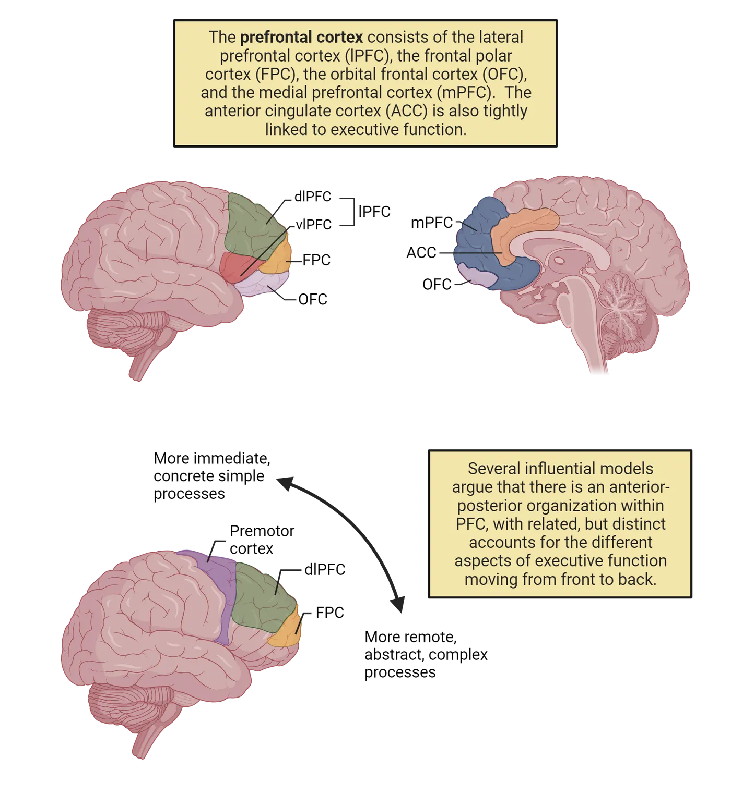
Anatomically, the prefrontal cortex can be broken down into several regions including the lateral prefrontal cortex (just anterior to the motor and premotor regions), the orbital frontal cortex and frontal pole (just in front of and below to the lateral prefrontal cortex), and the medial prefrontal cortex (located on the interior wall of each hemisphere). When researchers refer to the medial prefrontal cortex in the context of executive function, they also commonly include the anterior cingulate cortex, which lies just posterior to medial PFC and superior to the corpus callosum. The lateral prefrontal cortex is also commonly divided further into dorsolateral prefrontal cortex (dlPFC) and ventrolateral prefrontal cortex (vlPFC).
Activity in each of these brain regions has been linked to the different executive functions discussed above using functional brain imaging (Methods: fMRI/MRI) and electrophysiological (Methods: EEG/ERP) techniques. For instance, fMRI studies show that that the WCST engages the dlPFC (Monchi et al., 2001) and vlPFC (Lie et al., 2006; for a review, see Nyhus & Barceló, 2009) and structural MRI evidence suggests that PFC volume correlates with performance in the task (Yuan & Raz, 2014). Other fMRI studies, using related task-switching paradigms, find activity in regions such as the ACC (Ravizza & Carter, 2008) and premotor cortex (Slagter et al., 2006). Planning and sequencing tasks such as the ToL reliably engage the dlPFC (van den Heuvel et al., 2003) and ACC (Lazeron et al., 2000), and non-invasive brain stimulation to the left dlPFC improves performance on the ToL task (Kaller et al., 2013). Tasks that involve inhibitory processing are associated with activity throughout the prefrontal cortex (for two recent reviews, see Banich, 2019; Hung et al., 2018). Finally, the ACC and mPFC have been closely linked to self- and error-monitoring tasks through electrophysiological markers such as the error-related negativity (Falkenstein et al., 1991; Gehring et al., 2018), which is a negative ERP component that occurs within the first ~100ms after a participant makes a mistake in a variety of tasks (e.g., the Flanker task) and is thought to be generated by the ACC (Dehaene et al., 1994). Functional MRI studies provide converging evidence for a critical role of the ACC in error-monitoring (e.g., Iannaccone et al., 2015).
It is important to note that while the bulk of the research discussed thus far focuses on human and non-human primates, there is in fact a wealth of research suggesting a link between executive function and prefrontal cortex in other species. Using analogs of many of the paradigms describe above, researchers have established a critical role of the rodent prefrontal cortex in executive functions such as task and set switching (e.g., Bortz et al., 2023; Ragozzino, 2007), spatial and olfactory working memory (e.g., Wang et al., 2023), the Flanker task (e.g., Fisher et al., 2020), and error monitoring (e.g., Olguin et al., 2023).
Although there is clear consensus that the prefrontal cortices are critical for many of the above-mentioned aspects of executive function, there is considerable debate about how to best characterize the division of labor within PFC. There isn't a single agreed-upon mapping between different executive functions and different brain regions (to paraphrase an old expression, if you ask 5 neuroscientists how executive functions are organized in the PFC, you'll get 6 opinions!). Nevertheless, two relatively popular models of PFC organization (Badre & D'Esposito, 2009; Koechnlin & Summerfield, 2007; for a recent review, see Badre & Nee, 2018) propose related hierarchical organizations going from anterior to posterior PFC, albeit with slightly different properties in each case (Brain regions associated with executive function). In both models, the basic premise is that more anterior regions of the PFC are tightly linked to temporally remote, abstract, and higher-level aspects of executive function and control, whereas more posterior regions are more tightly linked to immediate, concrete, and sensory-driven aspects of executive function and control. To be sure, this glosses over some major differences between the two, but it provides a first glance at one potential way to break down this large network of prefrontal regions into smaller units. Other organizational schemes suggest, for example, hemispheric differences related to things such as task-switching vs. monitoring (Ambrosini et al., 2019), or for different types of working memory content (D'Esposito et al., 1998). However, several recent reviews (Friedman & Robbins, 2021; Menon & D'Esposito, 2021) suggest that it might be better to conceive of cognitive control and executive function as emerging from a set of overlapping networks that all involve the PFC, rather than focusing on the specific roles of individual regions.
Effects of brain damage on executive function
Proper executive functions rely on the integrity of the prefrontal cortex (for a review, see Alvarez & Emory, 2006). For instance, patients with frontal lobe lesions are often impaired on the WCST (Milner, 1963; Goldstein et al., 2004) and will continue to apply an old sorting rule, even when it has changed (a phenomenon known as perseveration), and even when they know that it has changed. Monkeys with prefrontal lesions (Dias et al., 1996) are also impaired in an analog of the WCST, suggesting that the role of the frontal cortex in executive function is not specific to humans. Similar findings occur in rats (Birrell & Brown, 2000; McGaughy et al., 2008) and further suggest that norepinephrine plays a critical role in this process. This fits well with the fact that a number of common treatments for executive dysfunction such as ADHD (e.g., Adderall) involve blocking the reuptake of norepinephrine (recall How Do Clinical Disorders Affect Attentional Function?).
Task switching paradigms reveal deficits after frontal lobe damage (e.g., Kumada & Humphreys, 2006; Rogers et al., 1998), as do tasks that involve planning and sequencing behaviors. Performance on the ToL game is impaired after damage to prefrontal regions (for a review, see Nitschke et al., 2017). Patients will sometimes perseverate on previous moves or attempt to break the rule of only moving one disc at a time. Moreover, they do not engage in strategic planning or sequencing, but rather often attempt to solve the task using "trial and error" approaches. Petrides & Milner (1982) showed a similar phenomenon using a self-ordered pointing task (SOPT), which requires patients to look at a set of objects on a computer screen and point to one that they choose. Then, on each subsequent trial, the researchers rearrange the objects and the patient has to point to a new object that they haven't already selected. This task relies on several aspects of executive function including working memory and sequencing since the patient needs to remember the objects that they have already selected even though they appear at new locations on the screen each trial, and, critically, damage to the frontal lobes impairs performance.
Damage to the prefrontal cortex and anterior cingulate cortex will also impact inhibitory control processes. For instance, Perret (1974) argued that left frontal lesions selectively impair performance on the Stroop test, although not all researchers agree with this claim (e.g., Stuss et al., 2001). Impairments on other related inhibitory control tasks have been linked to right frontal lobe damage (Aron et al., 2003) and lateral prefrontal and orbitofrontal lesions in monkeys selectively impair non-affective (i.e., non-emotional) and affective (i.e., emotional) inhibitory control processes, respectively (Dias et al., 1997).
Disruptions of inhibitory control after brain damage are not restricted to laboratory-based paradigms such as the Stroop test. In fact, patients with frontal lobe damage can exhibit much more striking failures in inhibitory control that affect their behavior outside of the laboratory. For instance, one of the most famous early case studies of damage to the frontal lobes involved Phineas Gage. Gage suffered a severe accident as a railroad construction worker, when a large tamping iron triggered an explosion and sent the metal rod through his skull, damaging significant portions of his frontal lobe, particularly his orbitofrontal cortices. Phineas Gage shows Gage holding the rod, as well as a modern reconstruction of the brain damage that he suffered (Damasio et al., 1994).
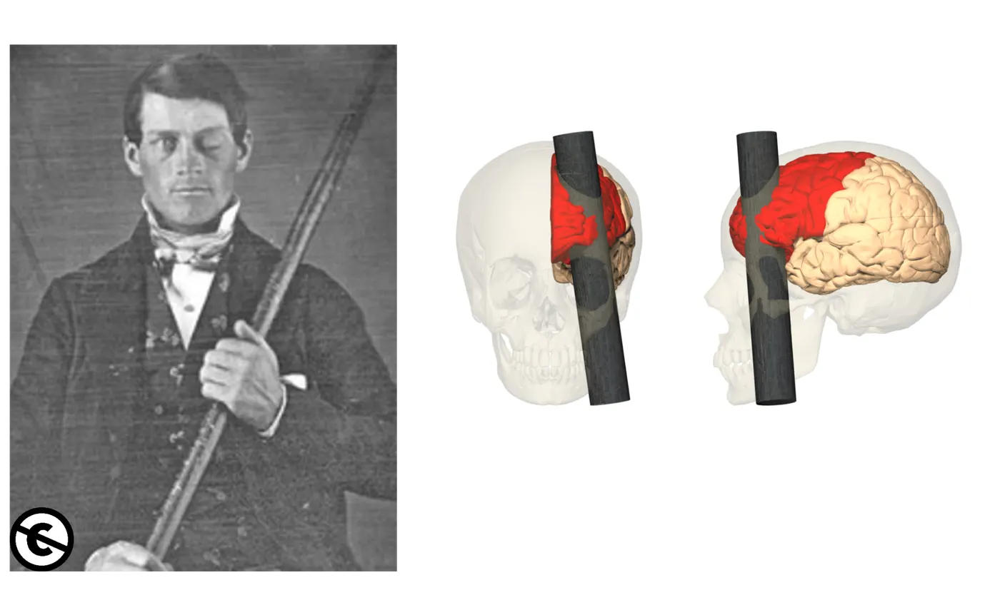
Gage survived the incident and was relatively unaffected in many aspects of cognition, however historical accounts suggest that his emotion regulation and inhibitory control processes were significantly impacted. He seemed to lack the ability to inhibit socially inappropriate behaviors and his associates described him as rude, irreverent, and profane after the accident (Harlow, 1848). An even more dramatic example of this lack of inhibition is evident in environmental dependency syndrome (originally labelled utilization behavior; Lhermitte, 1983), in which patients with frontal lobe damage (particularly the right OFC; Besnard et al., 2011) cannot help themselves from picking up and using objects in their environment, even if it is not appropriate to the situation. Lhermitte (1986), for instance, described a patient who picked up medical instruments placed before her and immediately began performing a medical exam on the researcher (e.g., taking his blood pressure and examining his throat with a tongue depressor). Another patient started to hang a picture on the researcher’s wall, having spotted a hammer and nail on a nearby table. In each of these cases, the patient lacked the ability to inhibit behaviors, and moreover, failed to recognize that the action was inappropriate in that context.
Dopamine, Schizophrenia, and Executive Function
In addition to focusing on the role of brain regions such as the PFC in executive function, there has been considerable interest in the role of specific neurotransmitter systems in these processes, particularly (but not exclusively) dopamine (Ott & Nieder, 2019; Robbins & Arnsten, 2009). Dopaminergic neurons in the midbrain project to the PFC through the mesocortical dopamine pathway, and a variety of studies have demonstrated an important role for this pathway in executive functions (Mesocortical dopamine system).
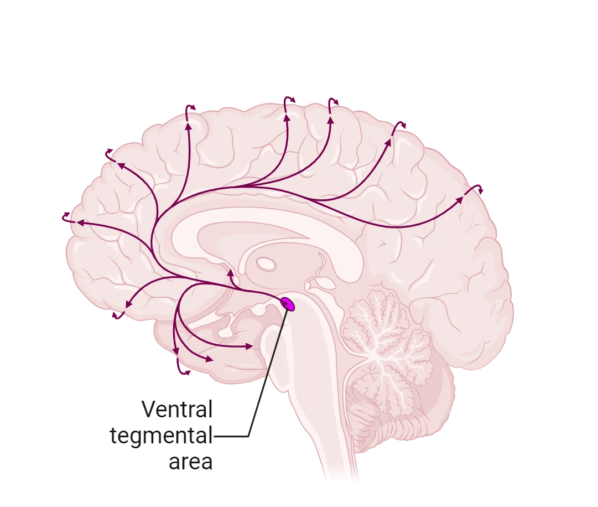
For instance, depleting dopamine availability in rats (Simon et al., 1980) and primates (Brozokski et al., 1979) results in working memory deficits. Similarly, PET studies (Takahashi et al., 2008) demonstrate that moderate dopamine levels in PFC correlated with optimal performance on the WCST (suggesting that an inverted-U shape represents the optimal levels of dopamine availability in PFC; Weber et al., 2022). Pharmacological intervention studies in humans showed that participants who received sulpiride (a dopaminergic receptor antagonist) performed worse on planning and sequencing tasks such as the ToL and other task switching paradigms (Mehta et al., 1999).
Disruptions in the dopaminergic and frontal systems can impact executive functions, as described above, but they can also lead to mental illness as in the case of schizophrenia, which affects roughly 1 in every 200 adults. The hallmark features of schizophrenia fall into one of two groupings: positive symptoms (e.g., delusional thought and hallucinations) and negative symptoms (e.g., decreased motivation or and reduced emotional expressiveness). In addition to positive and negative symptoms, executive function impairments and frontal lobe abnormalities are also present in the disorder, and these executive function impairments may, in fact, be more predictive of functioning and quality of life for individuals with schizophrenia than either their positive or negative symptoms (Bowie & Harvey, 2006). For instance, people with schizophrenia perform worse on the WCST compared to healthy individuals (Polgár et al., 2010). Planning and sequencing tasks such as the ToL are also negatively impacted by schizophrenia (Sponheim et al., 2010), as are inhibitory control tasks such as the Stroop task (Westerhausen et al., 2011). Structural brain imaging studies show a general decline in frontal lobe gray matter volume in schizophrenic patients (e.g., Andreasen et al., 2011). Functional brain imaging studies similarly show that schizophrenic patients typically show reduced activity in the frontal lobes (hypofrontality) when engaged in executive control tasks such as the WCST (Riehemann et al., 2001) and the ToL (Andreasen et al., 1992), or even when at rest (Hoshi et al., 2006).
Schizophrenia is a highly heritable disorder and there is strong evidence to suggest that genes which encode dopamine receptors may play a key role (Pantelis et al., 2014). Moreover, the most common treatments for the disorder involve antipsychotic drugs that target dopamine systems in the brain, and, in addition to reducing the positive symptoms of the disorder, these medications often result in demonstrable improvements in executive function (e.g., Bilder et al., 2002). It is important to note, however, that there is some debate concerning the use of antipsychotic medications for long-term care of individuals with schizophrenia (Gaebel et al., 2020), as well as the extent to which such drugs are effective at treating the cognitive symptoms of the disorder (Spark et al., 2022). In addition, more recent work suggests that other neurotransmitters, such as GABA and serotonin, may also play key roles in the disorder, and there is widespread recognition that current models of schizophrenia cannot focus solely on dopaminergic systems in the brain (e.g., Yang & Tsai, 2017).
Summary
Our ability to plan out and execute behaviors to achieve goals encompasses a group of cognitive processes collectively referred to as executive function. These processes rely heavily on the prefrontal cortex and on dopamine systems in the brain, although the precise neuroanatomical correlates of these functions are still debated. Finally, patients with damage to the frontal lobe and individuals with schizophrenia provide converging evidence concerning the role of the prefrontal cortex in these processes.
Key terms
Executive function, task switching, switch cost, Wisconsin Card Sorting Test, sequencing, Tower Of London Task, inhibitory control, Stroop Task, Go/No-Go Task, working memory, self-monitoring, Flanker Task, error monitoring, error-related negativity, perseveration, self-ordered pointing task, environmental dependency syndrome, schizophrenia, positive symptoms, negative symptoms, hypofrontalityReferences
Alvarez, J. A., & Emory, E. (2006). Executive function and the frontal lobes: A meta-analytic review. Neuropsychology review, 16(1), 17–42. https://doi.org/10.1007/s11065-006-9002-x
Ambrosini, E., Arbula, S., Rossato, C., Pacella, V., & Vallesi, A. (2019). Neuro-cognitive architecture of executive functions: A latent variable analysis. Cortex; a journal devoted to the study of the nervous system and behavior, 119, 441–456. https://doi.org/10.1016/j.cortex.2019.07.013
Andreasen, N. C., Rezai, K., Alliger, R., Swayze, V. W., 2nd, Flaum, M., Kirchner, P., Cohen, G., & O'Leary, D. S. (1992). Hypofrontality in neuroleptic-naive patients and in patients with chronic schizophrenia. Assessment with xenon 133 single-photon emission computed tomography and the Tower of London. Archives of general psychiatry, 49(12), 943–958. https://doi.org/10.1001/archpsyc.1992.01820120031006
Aron, A. R., Fletcher, P. C., Bullmore, E. T., Sahakian, B. J., & Robbins, T. W. (2003). Stop-signal inhibition disrupted by damage to right inferior frontal gyrus in humans. Nature neuroscience, 6(2), 115–116. https://doi.org/10.1038/nn1003
Badre, D., & D'Esposito, M. (2009). Is the rostro-caudal axis of the frontal lobe hierarchical?. Nature reviews. Neuroscience, 10(9), 659–669. https://doi.org/10.1038/nrn2667
Banich, M. T. (2019). The Stroop effect occurs at multiple points along a cascade of control: Evidence from cognitive neuroscience approaches. Frontiers in psychology, 10, 2164. https://doi.org/10.3389/fpsyg.2019.02164
Bilder, R. M., Goldman, R. S., Volavka, J., Czobor, P., Hoptman, M., Sheitman, B., Lindenmayer, J. P., Citrome, L., McEvoy, J., Kunz, M., Chakos, M., Cooper, T. B., Horowitz, T. L., & Lieberman, J. A. (2002). Neurocognitive effects of clozapine, olanzapine, risperidone, and haloperidol in patients with chronic schizophrenia or schizoaffective disorder. The American journal of psychiatry, 159(6), 1018–1028. https://doi.org/10.1176/appi.ajp.159.6.1018
Birrell, J. M., & Brown, V. J. (2000). Medial frontal cortex mediates perceptual attentional set shifting in the rat. The Journal of neuroscience: The official journal of the Society for Neuroscience, 20(11), 4320–4324. https://doi.org/10.1523/JNEUROSCI.20-11-04320.2000
Bortz, D. M., Feistritzer, C. M., & Grace, A. A. (2023). Medial prefrontal cortex to medial septum pathway activation improves cognitive flexibility in rats. The international journal of neuropsychopharmacology, 26(6), 426–437. https://doi.org/10.1093/ijnp/pyad019
Bowie, C. R., & Harvey, P. D. (2006). Cognitive deficits and functional outcome in schizophrenia. Neuropsychiatric disease and treatment, 2(4), 531–536. https://doi.org/10.2147/nedt.2006.2.4.531
Damasio, H., Grabowski, T., Frank, R., Galaburda, A. M., & Damasio, A. R. (1994). The return of Phineas Gage: Clues about the brain from the skull of a famous patient. Science (New York, N.Y.), 264(5162), 1102–1105. https://doi.org/10.1126/science.8178168
Dehaene, S., Posner, M. I., & Tucker, D. M. (1994). Localization of a neural system for error detection and compensation. Psychological science, 5, 303–305.
D'Esposito, M., Aguirre, G. K., Zarahn, E., Ballard, D., Shin, R. K., & Lease, J. (1998). Functional MRI studies of spatial and nonspatial working memory. Brain research. Cognitive brain research, 7(1), 1–13. https://doi.org/10.1016/s0926-6410(98)00004-4
Dias, R., Robbins, T. W., & Roberts, A. C. (1996). Primate analogue of the Wisconsin Card Sorting Test: Effects of excitotoxic lesions of the prefrontal cortex in the marmoset. Behavioral neuroscience, 110(5), 872–886. https://doi.org/10.1037//0735-7044.110.5.872
Dias, R., Robbins, T. W., & Roberts, A. C. (1997). Dissociable forms of inhibitory control within prefrontal cortex with an analog of the Wisconsin Card Sort Test: Restriction to novel situations and independence from "on-line" processing. The Journal of neuroscience: The official journal of the Society for Neuroscience, 17(23), 9285–9297. https://doi.org/10.1523/JNEUROSCI.17-23-09285.1997
Eriksen, B. A., & Eriksen, C. W. (1974). Effects of noise letters upon the identification of a target letter in a nonsearch task. Perception & psychophysics, 16, 143–149.
Falkenstein, M., Hohnsbein, J., Hoormann, J., & Blanke, L. (1991). Effects of crossmodal divided attention on late ERP components. II. Error processing in choice reaction tasks. Electroencephalography and clinical neurophysiology, 78(6), 447–455. https://doi.org/10.1016/0013-4694(91)90062-9
Fisher, B. M., Saksida, L. M., Robbins, T. W., & Bussey, T. J. (2020). Functional dissociations between subregions of the medial prefrontal cortex on the rodent touchscreen continuous performance test (rCPT) of attention. Behavioral neuroscience, 134(1), 1–14. https://doi.org/10.1037/bne0000338
Friedman, N. P., & Robbins, T. W. (2022). The role of prefrontal cortex in cognitive control and executive function. Neuropsychopharmacology: Official publication of the American College of Neuropsychopharmacology, 47(1), 72–89. https://doi.org/10.1038/s41386-021-01132-0
Gaebel, W., Stricker, J., & Riesbeck, M. (2020). The long-term antipsychotic treatment of schizophrenia: A selective review of clinical guidelines and clinical case examples. Schizophrenia research, 225, 4–14. https://doi.org/10.1016/j.schres.2019.10.049
Gehring, W. J., Goss, B., Coles, M. G. H., Meyer, D. E., & Donchin, E. (2018). The error-related negativity. Perspectives on psychological science: A journal of the Association for Psychological Science, 13(2), 200–204. https://doi.org/10.1177/1745691617715310
Goldstein, B., Obrzut, J. E., John, C., Ledakis, G., & Armstrong, C. L. (2004). The impact of frontal and non-frontal brain tumor lesions on Wisconsin Card Sorting Test performance. Brain and cognition, 54(2), 110–116. https://doi.org/10.1016/S0278-2626(03)00269-0
Hoshi, Y., Shinba, T., Sato, C., & Doi, N. (2006). Resting hypofrontality in schizophrenia: A study using near-infrared time-resolved spectroscopy. Schizophrenia research, 84(2–3), 411–420. https://doi.org/10.1016/j.schres.2006.03.010
Hung, Y., Gaillard, S. L., Yarmak, P., & Arsalidou, M. (2018). Dissociations of cognitive inhibition, response inhibition, and emotional interference: Voxelwise ALE meta-analyses of fMRI studies. Human brain mapping, 39(10), 4065–4082. https://doi.org/10.1002/hbm.24232
Hutchison, K. A., Balota, D. A., & Duchek, J. M. (2010). The utility of Stroop task switching as a marker for early-stage Alzheimer's disease. Psychology and aging, 25(3), 545–559. https://doi.org/10.1037/a0018498
Kahn, R. S., Sommer, I. E., Murray, R. M., Meyer-Lindenberg, A., Weinberger, D. R., Cannon, T. D., O'Donovan, M., Correll, C. U., Kane, J. M., van Os, J., & Insel, T. R. (2015). Schizophrenia. Nature reviews. Disease primers, 1, 15067. https://doi.org/10.1038/nrdp.2015.67
Kaller, C. P., Heinze, K., Frenkel, A., Läppchen, C. H., Unterrainer, J. M., Weiller, C., Lange, R., & Rahm, B. (2013). Differential impact of continuous theta-burst stimulation over left and right DLPFC on planning. Human brain mapping, 34(1), 36–51. https://doi.org/10.1002/hbm.21423
Kumada, T., & Humphreys, G. W. (2006). Dimensional weighting and task switching following frontal lobe damage: Fractionating the task switching deficit. Cognitive neuropsychology, 23(3), 424–457. https://doi.org/10.1080/02643290542000058
Lappin, J. S., & Eriksen, C. W. (1966). Use of a delayed signal to stop a visual reaction-time response. Journal of experimental psychology, 72, 805–811.
Lazeron, R. H., Rombouts, S. A., Machielsen, W. C., Scheltens, P., Witter, M. P., Uylings, H. B., & Barkhof, F. (2000). Visualizing brain activation during planning: The tower of London test adapted for functional MR imaging. AJNR. American journal of neuroradiology, 21(8), 1407–1414.
Lhermitte, F. (1986). Human autonomy and the frontal lobes. Part II: Patient behavior in complex and social situations: The "environmental dependency syndrome". Annals of neurology, 19(4), 335–343. https://doi.org/10.1002/ana.410190405
Lie, C. H., Specht, K., Marshall, J. C., & Fink, G. R. (2006). Using fMRI to decompose the neural processes underlying the Wisconsin Card Sorting Test. NeuroImage, 30(3), 1038–1049. https://doi.org/10.1016/j.neuroimage.2005.10.031
McGaughy, J., Ross, R. S., & Eichenbaum, H. (2008). Noradrenergic, but not cholinergic, deafferentation of prefrontal cortex impairs attentional set-shifting. Neuroscience, 153(1), 63–71. https://doi.org/10.1016/j.neuroscience.2008.01.064
Mehta, M. A., Sahakian, B. J., McKenna, P. J., & Robbins, T. W. (1999). Systemic sulpiride in young adult volunteers simulates the profile of cognitive deficits in Parkinson's disease. Psychopharmacology, 146(2), 162–174. https://doi.org/10.1007/s002130051102
Menon, V., & D'Esposito, M. (2022). The role of PFC networks in cognitive control and executive function. Neuropsychopharmacology: Official publication of the American College of Neuropsychopharmacology, 47(1), 90–103. https://doi.org/10.1038/s41386-021-01152-w
Milner, B. (1963). Effects of different brain lesions on card sorting: The role of the frontal lobes. Archives of neurology, 9, 90–100.
Monchi, O., Petrides, M., Petre, V., Worsley, K., & Dagher, A. (2001). Wisconsin Card Sorting revisited: Distinct neural circuits participating in different stages of the task identified by event-related functional magnetic resonance imaging. The Journal of neuroscience: The official journal of the Society for Neuroscience, 21(19), 7733–7741. https://doi.org/10.1523/JNEUROSCI.21-19-07733.2001
Monsell, S. (2003). Task switching. Trends in cognitive sciences, 7(3), 134–140. https://doi.org/10.1016/s1364-6613(03)00028-7
Nyhus, E., & Barceló, F. (2009). The Wisconsin Card Sorting Test and the cognitive assessment of prefrontal executive functions: A critical update. Brain and cognition, 71(3), 437–451. https://doi.org/10.1016/j.bandc.2009.03.005
Olguin, S. L., Cavanagh, J. F., Young, J. W., & Brigman, J. L. (2023). Impaired cognitive control after moderate prenatal alcohol exposure corresponds to altered EEG power during a rodent touchscreen continuous performance task. Neuropharmacology, 236, 109599. https://doi.org/10.1016/j.neuropharm.2023.109599
Ott, T., & Nieder, A. (2019). Dopamine and cognitive control in prefrontal cortex. Trends in cognitive sciences, 23(3), 213–234. https://doi.org/10.1016/j.tics.2018.12.006
Perret, E. (1974). The left frontal lobe of man and the suppression of habitual responses in verbal categorical behaviour. Neuropsychologia, 12(3), 323–330. https://doi.org/10.1016/0028-3932(74)90047-5
Polgár, P., Réthelyi, J. M., Bálint, S., Komlósi, S., Czobor, P., & Bitter, I. (2010). Executive function in deficit schizophrenia: What do the dimensions of the Wisconsin Card Sorting Test tell us?. Schizophrenia research, 122(1-3), 85–93. https://doi.org/10.1016/j.schres.2010.06.007
Ragozzino, M. E. (2007). The contribution of the medial prefrontal cortex, orbitofrontal cortex, and dorsomedial striatum to behavioral flexibility. Annals of the New York Academy of Sciences, 1121, 355–375. https://doi.org/10.1196/annals.1401.013
Ravizza, S. M., & Carter, C. S. (2008). Shifting set about task switching: Behavioral and neural evidence for distinct forms of cognitive flexibility. Neuropsychologia, 46(12), 2924–2935. https://doi.org/10.1016/j.neuropsychologia.2008.06.006
Riehemann, S., Volz, H. P., Stützer, P., Smesny, S., Gaser, C., & Sauer, H. (2001). Hypofrontality in neuroleptic-naive schizophrenic patients during the Wisconsin Card Sorting Test--a fMRI study. European archives of psychiatry and clinical neuroscience, 251(2), 66–71. https://doi.org/10.1007/s004060170055
Robbins, T. W., & Arnsten, A. F. (2009). The neuropsychopharmacology of fronto-executive function: Monoaminergic modulation. Annual review of neuroscience, 32, 267–287. https://doi.org/10.1146/annurev.neuro.051508.135535
Rogers, R. D., Sahakian, B. J., Hodges, J. R., Polkey, C. E., Kennard, C., & Robbins, T. W. (1998). Dissociating executive mechanisms of task control following frontal lobe damage and Parkinson's disease. Brain: A journal of neurology, 121(Pt 5), 815–842. https://doi.org/10.1093/brain/121.5.815
Spark, D. L., Fornito, A., Langmead, C. J., & Stewart, G. D. (2022). Beyond antipsychotics: A twenty-first century update for preclinical development of schizophrenia therapeutics. Translational psychiatry, 12(1), 147. https://doi.org/10.1038/s41398-022-01904-2
Wang, T., Guo, M., Wang, N., Zhai, H., Wang, Z., & Xu, G. (2023). Effects of theta burst stimulation on the coherence of local field potential during working memory task in rats. Brain research, 1813, 148408. https://doi.org/10.1016/j.brainres.2023.148408
Yang, A. C., & Tsai, S. J. (2017). New targets for schizophrenia treatment beyond the dopamine hypothesis. International journal of molecular sciences, 18(8), 1689. https://doi.org/10.3390/ijms18081689
Practice The multiple-choice and fill-in-the-blank questions for this section are interactive and live on OpenStax, so they are not carried here: open the book on openstax.org.
Adapted from Introduction to Behavioral Neuroscience by OpenStax, licensed under CC BY-NC-SA 4.0. Access for free at openstax.org. Changes: set in this site’s own pages and type, the images recompressed, the interactive exercises and videos linked rather than carried. This adaptation is offered under the same licence.